import os
import textwrap
import pandas as pd
import seaborn as sns
import statsmodels.api as sm
import matplotlib.pyplot as plt
from natsort import index_natsortedAnalysis v4
Analysis v4
Calculating the Variance of the AF and FPS values
It would be quite interesting to see if for each variant site per motif, the variance of the AF and FPS values are correlated.
I.e. if a variant site has a high variance in AF values, does it also have a high variance in FPS values?
First, load the data file as dataframe and then truncate the columns to include on AF and FPS data. Next, convert the dataframe into long format.
# import the data
# filepath = '/home/users/ntu/suffiazi/scratch/outputs/tmp/input_data/E2F5_E2F5_HUMAN.H11MO.0.B_fpscore-af-varsites-combined-matrix-wide.tsv'
filepath = '/home/msazizan/hyperspace/gatk-workflow/plotting/output-data/combined_matrix/E2F5_E2F5_HUMAN.H11MO.0.B_fpscore-af-varsites-combined-matrix-wide.tsv'
matrix_afps = pd.read_csv(filepath, sep='\t')
# extract motif id from filename
motif_id = os.path.basename(filepath).replace('_fpscore-af-varsites-combined-matrix-wide.tsv', '')
motif_id'E2F5_E2F5_HUMAN.H11MO.0.B'matrix_afps.head()| Chromosome | Start | End | 98JKPD8_lumA_fps | ANAB5F7_basal_fps | S6R691V_her2_fps | PU24GB8_lumB_fps | 2GAMBDQ_norm_fps | 2GAMBDQ_norm_varsite_pos | 2GAMBDQ_norm_ref_allele | ... | ANAB5F7_basal_AF | PU24GB8_lumB_varsite_pos | PU24GB8_lumB_ref_allele | PU24GB8_lumB_alt_allele | PU24GB8_lumB_AF | S6R691V_her2_varsite_pos | S6R691V_her2_ref_allele | S6R691V_her2_alt_allele | S6R691V_her2_AF | region_id | |
|---|---|---|---|---|---|---|---|---|---|---|---|---|---|---|---|---|---|---|---|---|---|
| 0 | chr1 | 905473 | 905483 | 0.10260 | 0.12218 | 0.13921 | 0.12024 | 0.14062 | NaN | NaN | ... | 0.000000 | 905474.0 | G | A | 0.027778 | NaN | NaN | NaN | 0.000000 | chr1:905473-905483 |
| 1 | chr1 | 925405 | 925415 | 0.09540 | 0.03670 | 0.09011 | 0.05082 | 0.05586 | 925409.0 | T | ... | 0.730769 | 925409.0 | T | C | 0.769231 | 925409.0 | T | C | 0.730769 | chr1:925405-925415 |
| 2 | chr1 | 1020750 | 1020760 | 0.09749 | 0.09080 | 0.07864 | 0.10880 | 0.08458 | 1020755.0 | C | ... | 0.000000 | NaN | NaN | NaN | 0.000000 | NaN | NaN | NaN | 0.000000 | chr1:1020750-1020760 |
| 3 | chr1 | 1130413 | 1130423 | 0.11471 | 0.04786 | 0.11338 | 0.14384 | 0.15151 | 1130420.0 | C | ... | 0.062500 | 1130420.0 | C | T | 0.131579 | 1130420.0 | C | T | 0.147059 | chr1:1130413-1130423 |
| 4 | chr1 | 1225277 | 1225287 | 0.01792 | 0.04624 | 0.02729 | 0.01957 | 0.02657 | 1225285.0 | G | ... | 0.062500 | 1225285.0 | G | A | 0.078947 | 1225285.0 | G | A | 0.088235 | chr1:1225277-1225287 |
5 rows × 29 columns
Let’s filter the loaded table to include only the _AF and _fps columns, as well as the region_id column.
afps_df = matrix_afps.filter(regex='_AF$|_fps$|_id$').copy()
afps_df.head(5)| 98JKPD8_lumA_fps | ANAB5F7_basal_fps | S6R691V_her2_fps | PU24GB8_lumB_fps | 2GAMBDQ_norm_fps | 2GAMBDQ_norm_AF | 98JKPD8_lumA_AF | ANAB5F7_basal_AF | PU24GB8_lumB_AF | S6R691V_her2_AF | region_id | |
|---|---|---|---|---|---|---|---|---|---|---|---|
| 0 | 0.10260 | 0.12218 | 0.13921 | 0.12024 | 0.14062 | 0.000000 | 0.000000 | 0.000000 | 0.027778 | 0.000000 | chr1:905473-905483 |
| 1 | 0.09540 | 0.03670 | 0.09011 | 0.05082 | 0.05586 | 1.000000 | 1.000000 | 0.730769 | 0.769231 | 0.730769 | chr1:925405-925415 |
| 2 | 0.09749 | 0.09080 | 0.07864 | 0.10880 | 0.08458 | 0.062500 | 0.000000 | 0.000000 | 0.000000 | 0.000000 | chr1:1020750-1020760 |
| 3 | 0.11471 | 0.04786 | 0.11338 | 0.14384 | 0.15151 | 0.250000 | 0.181818 | 0.062500 | 0.131579 | 0.147059 | chr1:1130413-1130423 |
| 4 | 0.01792 | 0.04624 | 0.02729 | 0.01957 | 0.02657 | 0.071429 | 0.090909 | 0.062500 | 0.078947 | 0.088235 | chr1:1225277-1225287 |
# convert to long format
afps_df_long = afps_df.melt(id_vars=["region_id"], var_name="variable", value_name="value")
# split the variable column into sample_id and type columns using reverse split string method, which returns a dataframe of columns based on the number of splits (n=x); this can directly be assigned to new columns in the original dataframe
afps_df_long[['sample_id', 'type']] = afps_df_long['variable'].str.rsplit('_', n=1, expand=True)
# drop the redundant 'variable' column
afps_df_long = afps_df_long.drop(columns=["variable"])
# now pivot the dataframe to create new columns based on the type column
afps_df_lpv = afps_df_long.pivot(index=['region_id', 'sample_id'], columns='type', values='value').reset_index()
# remove the index name and rename the columns to match the type values
afps_df_lpv = afps_df_lpv.rename_axis(None, axis=1).rename(columns={'fps': 'FPS'})
# sort the dataframe by region_id naturally
afps_df_lpv = afps_df_lpv.reindex(index=index_natsorted(afps_df_lpv['region_id']))
afps_df_lpv = afps_df_lpv.reset_index(drop=True)
afps_df_lpv| region_id | sample_id | AF | FPS | |
|---|---|---|---|---|
| 0 | chr1:905473-905483 | 2GAMBDQ_norm | 0.000000 | 0.14062 |
| 1 | chr1:905473-905483 | 98JKPD8_lumA | 0.000000 | 0.10260 |
| 2 | chr1:905473-905483 | ANAB5F7_basal | 0.000000 | 0.12218 |
| 3 | chr1:905473-905483 | PU24GB8_lumB | 0.027778 | 0.12024 |
| 4 | chr1:905473-905483 | S6R691V_her2 | 0.000000 | 0.13921 |
| ... | ... | ... | ... | ... |
| 10920 | chrX:150849074-150849084 | 2GAMBDQ_norm | 0.750000 | 0.20522 |
| 10921 | chrX:150849074-150849084 | 98JKPD8_lumA | 0.500000 | 0.34392 |
| 10922 | chrX:150849074-150849084 | ANAB5F7_basal | 0.600000 | 0.07363 |
| 10923 | chrX:150849074-150849084 | PU24GB8_lumB | 0.605263 | 0.24735 |
| 10924 | chrX:150849074-150849084 | S6R691V_her2 | 0.588235 | 0.35995 |
10925 rows × 4 columns
# afps_df_lpv[afps_df_lpv['sample_id'] == '2GAMBDQ_norm'].describe()AF–FPS Matrix
At this point, we now have both a matrix of AF and FPS values in wide form (afps_df) and the same dataset in long form (afps_df_lpv). We can scale the FPS values to be between 0 and 1 now.
# use MinMaxScaler to scale the raw fps values to range between 0 and 1
from sklearn.preprocessing import MinMaxScaler
# scale the FPS values to a range of 0-1
# Initialize a MinMaxScaler
scaler = MinMaxScaler()
# copy df
fps_df_scaled = matrix_afps.filter(regex='_fps$|_id$').copy()
# set the index to 'region_id'
fps_df_scaled = fps_df_scaled.set_index('region_id')
# Fit the MinMaxScaler to the 'FPS' column and transform it
fps_df_scaled = pd.DataFrame(scaler.fit_transform(fps_df_scaled), columns=fps_df_scaled.columns, index=fps_df_scaled.index)
# rename columns by adding '_scaled' to the column names
fps_df_scaled = fps_df_scaled.add_suffix('_scaled')
fps_df_scaled| 98JKPD8_lumA_fps_scaled | ANAB5F7_basal_fps_scaled | S6R691V_her2_fps_scaled | PU24GB8_lumB_fps_scaled | 2GAMBDQ_norm_fps_scaled | |
|---|---|---|---|---|---|
| region_id | |||||
| chr1:905473-905483 | 0.045183 | 0.062660 | 0.069304 | 0.056307 | 0.065892 |
| chr1:925405-925415 | 0.042012 | 0.018821 | 0.044860 | 0.023798 | 0.026175 |
| chr1:1020750-1020760 | 0.042933 | 0.046566 | 0.039150 | 0.050950 | 0.039632 |
| chr1:1130413-1130423 | 0.050516 | 0.024545 | 0.056445 | 0.067359 | 0.070994 |
| chr1:1225277-1225287 | 0.007892 | 0.023714 | 0.013586 | 0.009164 | 0.012450 |
| ... | ... | ... | ... | ... | ... |
| chrX:118300271-118300281 | 0.003096 | 0.005052 | 0.002768 | 0.002861 | 0.004264 |
| chrX:119211181-119211191 | 0.005351 | 0.006087 | 0.005103 | 0.006397 | 0.006813 |
| chrX:139342109-139342119 | 0.008878 | 0.004262 | 0.010728 | 0.007750 | 0.010121 |
| chrX:147508113-147508123 | 0.003567 | 0.003246 | 0.003470 | 0.002946 | 0.006865 |
| chrX:150849074-150849084 | 0.151456 | 0.037761 | 0.179197 | 0.115831 | 0.096162 |
2185 rows × 5 columns
Now we should convert the FPS scaled dataframe into long form.
# reset index
fps_df_scaled_long = fps_df_scaled.reset_index()
# convert to long format
fps_df_scaled_long = fps_df_scaled_long.melt(id_vars=["region_id"], var_name="variable", value_name="value")
# split the variable column into sample_id and type columns using reverse split string method, which returns a dataframe of columns based on the number of splits (n=x); this can directly be assigned to new columns in the original dataframe
# Split the 'variable' column into three parts
fps_df_scaled_long[['part1', 'part2', 'part3']] = fps_df_scaled_long['variable'].str.rsplit('_', n=2, expand=True)
# Assign part1 to 'sample_id' and concatenate the other parts to form 'type'
fps_df_scaled_long['sample_id'] = fps_df_scaled_long['part1']
fps_df_scaled_long['type'] = fps_df_scaled_long['part2'].str.upper() + '_' + fps_df_scaled_long['part3']
# Drop the unnecessary columns
fps_df_scaled_long = fps_df_scaled_long.drop(['variable', 'part1', 'part2', 'part3'], axis=1)
# now pivot the dataframe to create new columns based on the type column
fps_df_scaled_lpv = fps_df_scaled_long.pivot(index=['region_id', 'sample_id'], columns='type', values='value').reset_index()
# remove the index name and rename the columns to match the type values
fps_df_scaled_lpv = fps_df_scaled_lpv.rename_axis(None, axis=1)
# sort the dataframe by region_id naturally
fps_df_scaled_lpv = fps_df_scaled_lpv.reindex(index=index_natsorted(fps_df_scaled_lpv['region_id']))
fps_df_scaled_lpv = fps_df_scaled_lpv.reset_index(drop=True)
fps_df_scaled_lpv| region_id | sample_id | FPS_scaled | |
|---|---|---|---|
| 0 | chr1:905473-905483 | 2GAMBDQ_norm | 0.065892 |
| 1 | chr1:905473-905483 | 98JKPD8_lumA | 0.045183 |
| 2 | chr1:905473-905483 | ANAB5F7_basal | 0.062660 |
| 3 | chr1:905473-905483 | PU24GB8_lumB | 0.056307 |
| 4 | chr1:905473-905483 | S6R691V_her2 | 0.069304 |
| ... | ... | ... | ... |
| 10920 | chrX:150849074-150849084 | 2GAMBDQ_norm | 0.096162 |
| 10921 | chrX:150849074-150849084 | 98JKPD8_lumA | 0.151456 |
| 10922 | chrX:150849074-150849084 | ANAB5F7_basal | 0.037761 |
| 10923 | chrX:150849074-150849084 | PU24GB8_lumB | 0.115831 |
| 10924 | chrX:150849074-150849084 | S6R691V_her2 | 0.179197 |
10925 rows × 3 columns
# plot fps distribution
plt.figure(figsize=(10, 5), dpi=300)
sns.kdeplot(data=fps_df_scaled_lpv, x="FPS_scaled", hue="sample_id", fill=False, common_norm=False, alpha=.5, linewidth=1)
plt.show()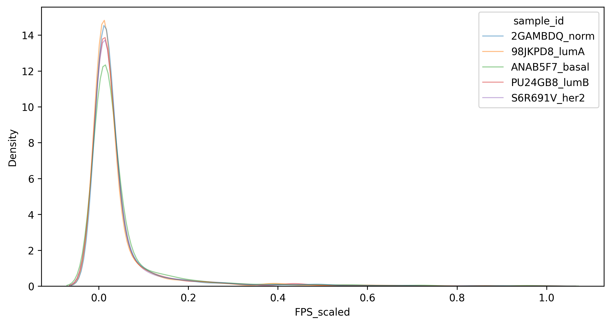
Merging afps_df_lpv and fps_df_scaled_lpv
Now we can merge the two long dataframes together to get both raw FPS and scaled FPS values in one dataframe.
afps_df_lpv| region_id | sample_id | AF | FPS | |
|---|---|---|---|---|
| 0 | chr1:905473-905483 | 2GAMBDQ_norm | 0.000000 | 0.14062 |
| 1 | chr1:905473-905483 | 98JKPD8_lumA | 0.000000 | 0.10260 |
| 2 | chr1:905473-905483 | ANAB5F7_basal | 0.000000 | 0.12218 |
| 3 | chr1:905473-905483 | PU24GB8_lumB | 0.027778 | 0.12024 |
| 4 | chr1:905473-905483 | S6R691V_her2 | 0.000000 | 0.13921 |
| ... | ... | ... | ... | ... |
| 10920 | chrX:150849074-150849084 | 2GAMBDQ_norm | 0.750000 | 0.20522 |
| 10921 | chrX:150849074-150849084 | 98JKPD8_lumA | 0.500000 | 0.34392 |
| 10922 | chrX:150849074-150849084 | ANAB5F7_basal | 0.600000 | 0.07363 |
| 10923 | chrX:150849074-150849084 | PU24GB8_lumB | 0.605263 | 0.24735 |
| 10924 | chrX:150849074-150849084 | S6R691V_her2 | 0.588235 | 0.35995 |
10925 rows × 4 columns
fps_df_scaled_lpv| region_id | sample_id | FPS_scaled | |
|---|---|---|---|
| 0 | chr1:905473-905483 | 2GAMBDQ_norm | 0.065892 |
| 1 | chr1:905473-905483 | 98JKPD8_lumA | 0.045183 |
| 2 | chr1:905473-905483 | ANAB5F7_basal | 0.062660 |
| 3 | chr1:905473-905483 | PU24GB8_lumB | 0.056307 |
| 4 | chr1:905473-905483 | S6R691V_her2 | 0.069304 |
| ... | ... | ... | ... |
| 10920 | chrX:150849074-150849084 | 2GAMBDQ_norm | 0.096162 |
| 10921 | chrX:150849074-150849084 | 98JKPD8_lumA | 0.151456 |
| 10922 | chrX:150849074-150849084 | ANAB5F7_basal | 0.037761 |
| 10923 | chrX:150849074-150849084 | PU24GB8_lumB | 0.115831 |
| 10924 | chrX:150849074-150849084 | S6R691V_her2 | 0.179197 |
10925 rows × 3 columns
fig = sm.qqplot(fps_df_scaled_lpv['FPS_scaled'], line='45', fit=True)
plt.show()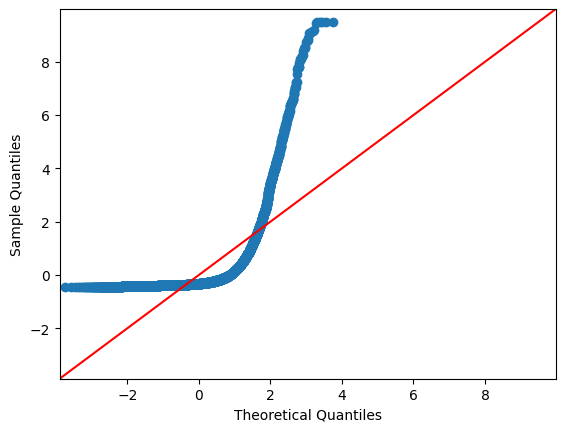
# merge two dataframes on region_id and sample_id
afps_full_dfl = afps_df_lpv.merge(fps_df_scaled_lpv, on=['region_id', 'sample_id'])
afps_full_dfl| region_id | sample_id | AF | FPS | FPS_scaled | |
|---|---|---|---|---|---|
| 0 | chr1:905473-905483 | 2GAMBDQ_norm | 0.000000 | 0.14062 | 0.065892 |
| 1 | chr1:905473-905483 | 98JKPD8_lumA | 0.000000 | 0.10260 | 0.045183 |
| 2 | chr1:905473-905483 | ANAB5F7_basal | 0.000000 | 0.12218 | 0.062660 |
| 3 | chr1:905473-905483 | PU24GB8_lumB | 0.027778 | 0.12024 | 0.056307 |
| 4 | chr1:905473-905483 | S6R691V_her2 | 0.000000 | 0.13921 | 0.069304 |
| ... | ... | ... | ... | ... | ... |
| 10920 | chrX:150849074-150849084 | 2GAMBDQ_norm | 0.750000 | 0.20522 | 0.096162 |
| 10921 | chrX:150849074-150849084 | 98JKPD8_lumA | 0.500000 | 0.34392 | 0.151456 |
| 10922 | chrX:150849074-150849084 | ANAB5F7_basal | 0.600000 | 0.07363 | 0.037761 |
| 10923 | chrX:150849074-150849084 | PU24GB8_lumB | 0.605263 | 0.24735 | 0.115831 |
| 10924 | chrX:150849074-150849084 | S6R691V_her2 | 0.588235 | 0.35995 | 0.179197 |
10925 rows × 5 columns
fig = sm.qqplot(afps_full_dfl['FPS_scaled'], line='45', fit=True)
plt.title('QQ plot of scaled FPS values')
plt.show()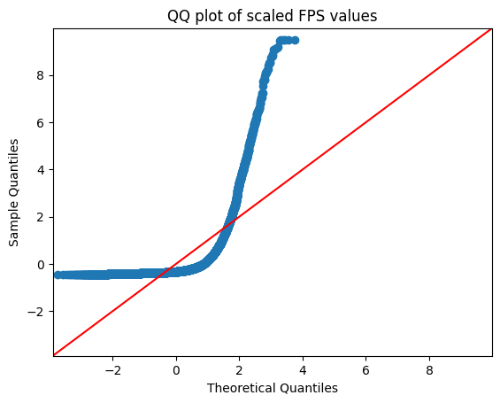
fig = sm.qqplot(afps_full_dfl['AF'], line='45', fit=True)
plt.title('QQ plot of AF values')
plt.show()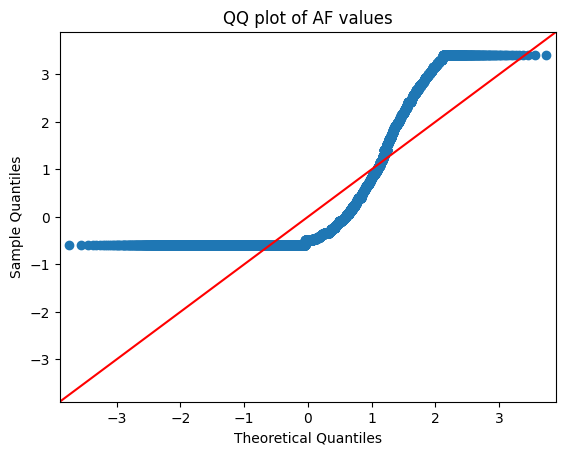
# save to file
# afps_full_dfl.to_csv(f'/home/msazizan/hyperspace/gatk-workflow/plotting/output-data/AF-FPS_regionsorted_full_longtable/{motif_id}_afps_full_scaled_longtable.tsv', sep='\t', index=False)sns.jointplot(data=afps_full_dfl, x='AF', y='FPS_scaled', kind='scatter', hue='sample_id', height=12)
plt.xlim(-0.1, 1.1)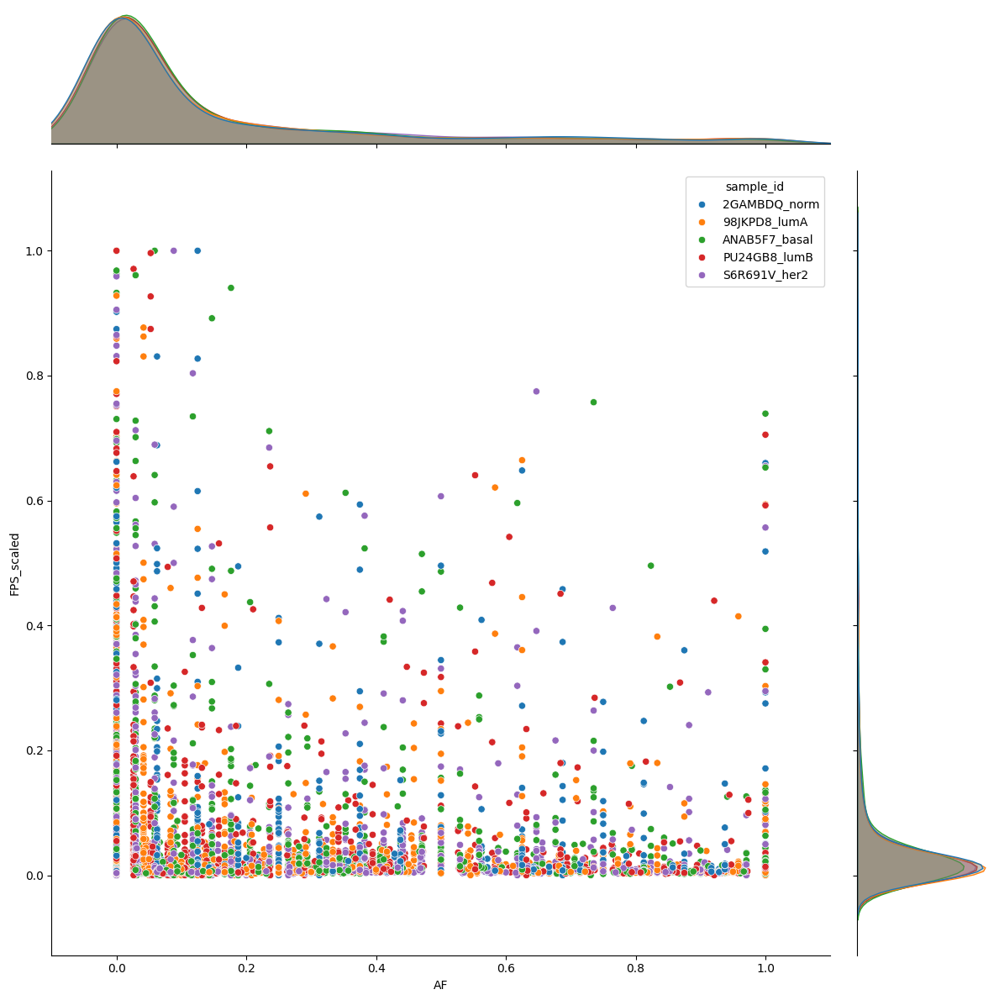
Calculating Variation Statistics
With the full data table cleaned up into a long format, we can now calculate the variation statistics for each region. We will calculate the following statistics: * variance (Var) * coefficient of variation (CV) * quartile coefficient of dispersion (QCD)
First calculate statistics on the raw FPS data.
# extract fps columns
fps_df = matrix_afps.filter(regex='_fps$|_id$').copy()
# calculate variance of fps values across samples per region_id and add to a new column called 'fps_var'
fps_df = fps_df.set_index('region_id')
fps_df['FPS_var'] = fps_df.var(axis=1)
# calculate the coefficient of variation (CV) of fps values across samples per region_id and add to a new column called 'fps_cv'
# fps_df['FPS_cv'] = fps_df.drop(columns=['FPS_var']).std(axis=1) / fps_df.drop(columns=['FPS_var']).mean(axis=1) * 100
# calculate the quartile coefficient of dispersion (QCD) of fps values across samples per region_id and add to a new column called 'fps_qcd'
# fps_df['FPS_qcd'] = (fps_df.drop(columns=['FPS_var', 'FPS_cv']).quantile(q=0.75, axis=1) - fps_df.drop(columns=['FPS_var', 'FPS_cv']).quantile(q=0.25, axis=1)) / (fps_df.drop(columns=['FPS_var', 'FPS_cv']).quantile(q=0.75, axis=1) + fps_df.drop(columns=['FPS_var', 'FPS_cv']).quantile(q=0.25, axis=1))
fps_df.head()| 98JKPD8_lumA_fps | ANAB5F7_basal_fps | S6R691V_her2_fps | PU24GB8_lumB_fps | 2GAMBDQ_norm_fps | FPS_var | |
|---|---|---|---|---|---|---|
| region_id | ||||||
| chr1:905473-905483 | 0.10260 | 0.12218 | 0.13921 | 0.12024 | 0.14062 | 0.000245 |
| chr1:925405-925415 | 0.09540 | 0.03670 | 0.09011 | 0.05082 | 0.05586 | 0.000659 |
| chr1:1020750-1020760 | 0.09749 | 0.09080 | 0.07864 | 0.10880 | 0.08458 | 0.000137 |
| chr1:1130413-1130423 | 0.11471 | 0.04786 | 0.11338 | 0.14384 | 0.15151 | 0.001668 |
| chr1:1225277-1225287 | 0.01792 | 0.04624 | 0.02729 | 0.01957 | 0.02657 | 0.000127 |
Then do the same on the fps scaled data.
# copy fps_df_scaled
fps_df_scaled_cp = fps_df_scaled.copy()
# calculate variance of fps_scaled values across samples per region_id and add to a new column called 'fps_scaled_var'
fps_df_scaled_cp['FPS_scaled_var'] = fps_df_scaled_cp.var(axis=1)
# calculate the coefficient of variation (CV) of fps values across samples per region_id and add to a new column called 'fps_scaled_cv'
# fps_df_scaled['FPS_scaled_cv'] = fps_df_scaled.drop(columns=['FPS_scaled_var']).std(axis=1) / fps_df_scaled.drop(columns=['FPS_scaled_var']).mean(axis=1) * 100
# calculate the quartile coefficient of dispersion (QCD) of fps values across samples per region_id and add to a new column called 'fps_scaled_qcd'
# fps_df_scaled['FPS_scaled_qcd'] = (fps_df_scaled.drop(columns=['FPS_scaled_var', 'FPS_scaled_cv']).quantile(q=0.75, axis=1) - fps_df_scaled.drop(columns=['FPS_scaled_var', 'FPS_scaled_cv']).quantile(q=0.25, axis=1)) / (fps_df_scaled.drop(columns=['FPS_scaled_var', 'FPS_scaled_cv']).quantile(q=0.75, axis=1) + fps_df_scaled.drop(columns=['FPS_scaled_var', 'FPS_scaled_cv']).quantile(q=0.25, axis=1))
fps_df_scaled_cp.head()| 98JKPD8_lumA_fps_scaled | ANAB5F7_basal_fps_scaled | S6R691V_her2_fps_scaled | PU24GB8_lumB_fps_scaled | 2GAMBDQ_norm_fps_scaled | FPS_scaled_var | |
|---|---|---|---|---|---|---|
| region_id | ||||||
| chr1:905473-905483 | 0.045183 | 0.062660 | 0.069304 | 0.056307 | 0.065892 | 0.000090 |
| chr1:925405-925415 | 0.042012 | 0.018821 | 0.044860 | 0.023798 | 0.026175 | 0.000134 |
| chr1:1020750-1020760 | 0.042933 | 0.046566 | 0.039150 | 0.050950 | 0.039632 | 0.000025 |
| chr1:1130413-1130423 | 0.050516 | 0.024545 | 0.056445 | 0.067359 | 0.070994 | 0.000338 |
| chr1:1225277-1225287 | 0.007892 | 0.023714 | 0.013586 | 0.009164 | 0.012450 | 0.000039 |
# Do the same for AF values
# extract af columns
af_df = matrix_afps.filter(regex='_AF$|_id$')
af_df = af_df.set_index('region_id')
# then calculate variance of af values across samples per region_id and add to a new column called 'af_var'
af_df['AF_var'] = af_df.var(axis=1)
af_df.head()| 2GAMBDQ_norm_AF | 98JKPD8_lumA_AF | ANAB5F7_basal_AF | PU24GB8_lumB_AF | S6R691V_her2_AF | AF_var | |
|---|---|---|---|---|---|---|
| region_id | ||||||
| chr1:905473-905483 | 0.000000 | 0.000000 | 0.000000 | 0.027778 | 0.000000 | 0.000154 |
| chr1:925405-925415 | 1.000000 | 1.000000 | 0.730769 | 0.769231 | 0.730769 | 0.019970 |
| chr1:1020750-1020760 | 0.062500 | 0.000000 | 0.000000 | 0.000000 | 0.000000 | 0.000781 |
| chr1:1130413-1130423 | 0.250000 | 0.181818 | 0.062500 | 0.131579 | 0.147059 | 0.004728 |
| chr1:1225277-1225287 | 0.071429 | 0.090909 | 0.062500 | 0.078947 | 0.088235 | 0.000139 |
Now merge the statistics tables together on region_id index.
# subset only the fps stats columns
# fps_stats_df = fps_df.filter(regex='_var$|_cv$|_qcd$|_id$').copy()
# fps_scaled_stats_df = fps_df_scaled.filter(regex='_var$|_cv$|_qcd$|_id$').copy()
fps_stats_df = fps_df.filter(regex='_var$|_id$').copy()
fps_scaled_stats_df = fps_df_scaled_cp.filter(regex='_var$|_id$').copy()
af_stats_df = af_df.filter(regex='_var$|_id$').copy()
# merge on region_id index from both tables
fps_stats_df_temp = fps_stats_df.merge(fps_scaled_stats_df, left_index=True, right_index=True)
# now merge with af_df
afps_stats_df = fps_stats_df_temp.merge(af_stats_df, left_index=True, right_index=True)
afps_stats_df| FPS_var | FPS_scaled_var | AF_var | |
|---|---|---|---|
| region_id | |||
| chr1:905473-905483 | 0.000245 | 9.036129e-05 | 0.000154 |
| chr1:925405-925415 | 0.000659 | 1.341879e-04 | 0.019970 |
| chr1:1020750-1020760 | 0.000137 | 2.462661e-05 | 0.000781 |
| chr1:1130413-1130423 | 0.001668 | 3.382467e-04 | 0.004728 |
| chr1:1225277-1225287 | 0.000127 | 3.889771e-05 | 0.000139 |
| ... | ... | ... | ... |
| chrX:118300271-118300281 | 0.000003 | 1.009942e-06 | 0.001020 |
| chrX:119211181-119211191 | 0.000003 | 5.101216e-07 | 0.001672 |
| chrX:139342109-139342119 | 0.000031 | 6.536719e-06 | 0.000889 |
| chrX:147508113-147508123 | 0.000012 | 2.588244e-06 | 0.000413 |
| chrX:150849074-150849084 | 0.013487 | 2.941480e-03 | 0.008072 |
2185 rows × 3 columns
Now we have a table of stats data to merge with the longform AF_FPS table (afps_full_dfl).
# set the index to 'region_id'
afps_full_dfli = afps_full_dfl.set_index('region_id')
afps_full_dfli| sample_id | AF | FPS | FPS_scaled | |
|---|---|---|---|---|
| region_id | ||||
| chr1:905473-905483 | 2GAMBDQ_norm | 0.000000 | 0.14062 | 0.065892 |
| chr1:905473-905483 | 98JKPD8_lumA | 0.000000 | 0.10260 | 0.045183 |
| chr1:905473-905483 | ANAB5F7_basal | 0.000000 | 0.12218 | 0.062660 |
| chr1:905473-905483 | PU24GB8_lumB | 0.027778 | 0.12024 | 0.056307 |
| chr1:905473-905483 | S6R691V_her2 | 0.000000 | 0.13921 | 0.069304 |
| ... | ... | ... | ... | ... |
| chrX:150849074-150849084 | 2GAMBDQ_norm | 0.750000 | 0.20522 | 0.096162 |
| chrX:150849074-150849084 | 98JKPD8_lumA | 0.500000 | 0.34392 | 0.151456 |
| chrX:150849074-150849084 | ANAB5F7_basal | 0.600000 | 0.07363 | 0.037761 |
| chrX:150849074-150849084 | PU24GB8_lumB | 0.605263 | 0.24735 | 0.115831 |
| chrX:150849074-150849084 | S6R691V_her2 | 0.588235 | 0.35995 | 0.179197 |
10925 rows × 4 columns
# merge afps_full_dfli with stats df on region_id
afps_merged_stats = afps_full_dfli.merge(afps_stats_df, left_index=True, right_index=True, how='left')
# sort naturally by region_id
afps_stats_mergesorted =afps_merged_stats.reset_index().reindex(index=index_natsorted(afps_merged_stats.index))
afps_stats_mergesorted| region_id | sample_id | AF | FPS | FPS_scaled | FPS_var | FPS_scaled_var | AF_var | |
|---|---|---|---|---|---|---|---|---|
| 5145 | chr1:905473-905483 | 2GAMBDQ_norm | 0.000000 | 0.14062 | 0.065892 | 0.000245 | 0.000090 | 0.000154 |
| 5146 | chr1:905473-905483 | 98JKPD8_lumA | 0.000000 | 0.10260 | 0.045183 | 0.000245 | 0.000090 | 0.000154 |
| 5147 | chr1:905473-905483 | ANAB5F7_basal | 0.000000 | 0.12218 | 0.062660 | 0.000245 | 0.000090 | 0.000154 |
| 5148 | chr1:905473-905483 | PU24GB8_lumB | 0.027778 | 0.12024 | 0.056307 | 0.000245 | 0.000090 | 0.000154 |
| 5149 | chr1:905473-905483 | S6R691V_her2 | 0.000000 | 0.13921 | 0.069304 | 0.000245 | 0.000090 | 0.000154 |
| ... | ... | ... | ... | ... | ... | ... | ... | ... |
| 10780 | chrX:150849074-150849084 | 2GAMBDQ_norm | 0.750000 | 0.20522 | 0.096162 | 0.013487 | 0.002941 | 0.008072 |
| 10781 | chrX:150849074-150849084 | 98JKPD8_lumA | 0.500000 | 0.34392 | 0.151456 | 0.013487 | 0.002941 | 0.008072 |
| 10782 | chrX:150849074-150849084 | ANAB5F7_basal | 0.600000 | 0.07363 | 0.037761 | 0.013487 | 0.002941 | 0.008072 |
| 10783 | chrX:150849074-150849084 | PU24GB8_lumB | 0.605263 | 0.24735 | 0.115831 | 0.013487 | 0.002941 | 0.008072 |
| 10784 | chrX:150849074-150849084 | S6R691V_her2 | 0.588235 | 0.35995 | 0.179197 | 0.013487 | 0.002941 | 0.008072 |
10925 rows × 8 columns
# save file
# afps_stats_mergesorted.to_csv(f'/home/msazizan/hyperspace/gatk-workflow/plotting/output-data/AF-FPS_regionsorted_full_longtable/{motif_id}_afps_full_scaled_longtable_with_stats.tsv', sep='\t', index=False)ASIDE: Visualizing FPS_scaled_var and AF_var
We can now see if there is a correlation between the variance of the AF and FPS values, per region_id. As the statistics are calculated per region_id, we can plot the FPS_scaled_var and AF_var values against each other.
# subset a copy of the dataframe with only the AF_var and FPS_scaled_var columns and region_id
afps_stats_ms_var = afps_stats_mergesorted[['region_id', 'FPS_scaled_var', 'AF_var']].copy().drop_duplicates().reset_index(drop=True)
# set region_id as index and then plot lmplot
afps_stats_ms_var = afps_stats_ms_var.set_index('region_id')
afps_stats_ms_var| FPS_scaled_var | AF_var | |
|---|---|---|
| region_id | ||
| chr1:905473-905483 | 9.036129e-05 | 0.000154 |
| chr1:925405-925415 | 1.341879e-04 | 0.019970 |
| chr1:1020750-1020760 | 2.462661e-05 | 0.000781 |
| chr1:1130413-1130423 | 3.382467e-04 | 0.004728 |
| chr1:1225277-1225287 | 3.889771e-05 | 0.000139 |
| ... | ... | ... |
| chrX:118300271-118300281 | 1.009942e-06 | 0.001020 |
| chrX:119211181-119211191 | 5.101216e-07 | 0.001672 |
| chrX:139342109-139342119 | 6.536719e-06 | 0.000889 |
| chrX:147508113-147508123 | 2.588244e-06 | 0.000413 |
| chrX:150849074-150849084 | 2.941480e-03 | 0.008072 |
2185 rows × 2 columns
# show rows with FPS_scaled_var > 0.001 and AF_var > 0.001
test_df = afps_stats_ms_var[(afps_stats_ms_var['FPS_scaled_var'] > 0.001) & (afps_stats_ms_var['AF_var'] > 0.001)]# plot the jointplot
g = sns.jointplot(data=afps_stats_ms_var, x="FPS_scaled_var", y="AF_var", height=10, ratio=5, color='darkslateblue' )
g.fig.suptitle(f'AF vs FPS var for {motif_id} (unfiltered: {len(afps_stats_ms_var)} regions)')
plt.show()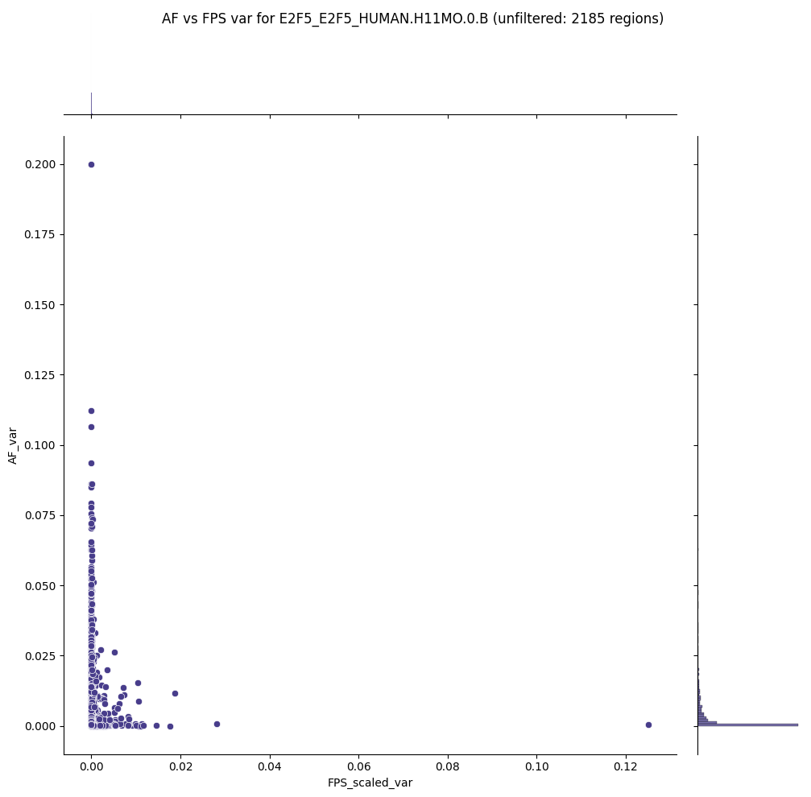
# plot the jointplot
g = sns.jointplot(data=test_df, x="FPS_scaled_var", y="AF_var", height=10, ratio=5, color='darkslateblue' )
g.fig.suptitle(f'AF vs FPS var for {motif_id} (filtered: {len(test_df)} regions)')
plt.tight_layout()
plt.show()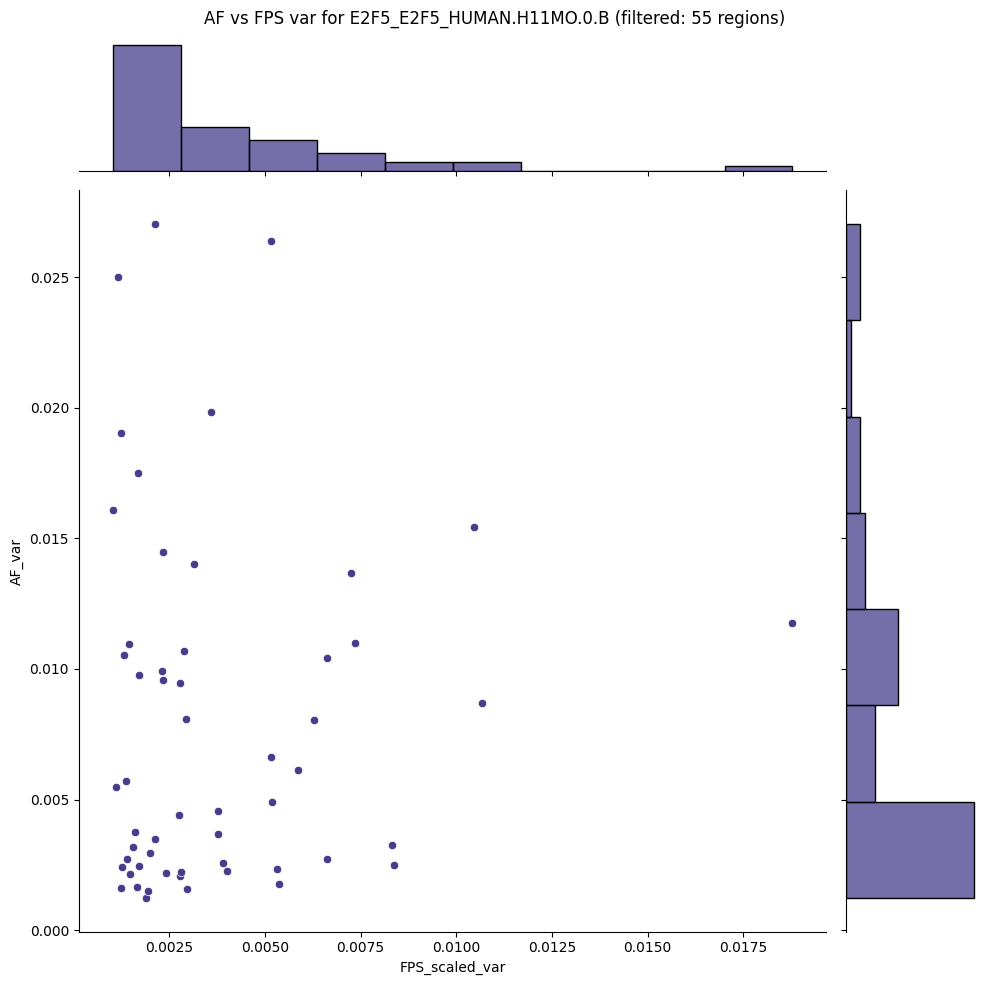
test_df.shape(55, 2)Filtering Variant Sites (FPS)
From here on, it makes sense to filter out variant sites that has FPS value == 0. This means that the raw FPS values across subtypes are zero, i.e. there is no evidence of footprinting at all at these sites despite a TFBS matching a motif being present (assigned by TOBIAS).
afps_stats_mergesorted| region_id | sample_id | AF | FPS | FPS_scaled | FPS_var | FPS_scaled_var | AF_var | |
|---|---|---|---|---|---|---|---|---|
| 5145 | chr1:905473-905483 | 2GAMBDQ_norm | 0.000000 | 0.14062 | 0.065892 | 0.000245 | 0.000090 | 0.000154 |
| 5146 | chr1:905473-905483 | 98JKPD8_lumA | 0.000000 | 0.10260 | 0.045183 | 0.000245 | 0.000090 | 0.000154 |
| 5147 | chr1:905473-905483 | ANAB5F7_basal | 0.000000 | 0.12218 | 0.062660 | 0.000245 | 0.000090 | 0.000154 |
| 5148 | chr1:905473-905483 | PU24GB8_lumB | 0.027778 | 0.12024 | 0.056307 | 0.000245 | 0.000090 | 0.000154 |
| 5149 | chr1:905473-905483 | S6R691V_her2 | 0.000000 | 0.13921 | 0.069304 | 0.000245 | 0.000090 | 0.000154 |
| ... | ... | ... | ... | ... | ... | ... | ... | ... |
| 10780 | chrX:150849074-150849084 | 2GAMBDQ_norm | 0.750000 | 0.20522 | 0.096162 | 0.013487 | 0.002941 | 0.008072 |
| 10781 | chrX:150849074-150849084 | 98JKPD8_lumA | 0.500000 | 0.34392 | 0.151456 | 0.013487 | 0.002941 | 0.008072 |
| 10782 | chrX:150849074-150849084 | ANAB5F7_basal | 0.600000 | 0.07363 | 0.037761 | 0.013487 | 0.002941 | 0.008072 |
| 10783 | chrX:150849074-150849084 | PU24GB8_lumB | 0.605263 | 0.24735 | 0.115831 | 0.013487 | 0.002941 | 0.008072 |
| 10784 | chrX:150849074-150849084 | S6R691V_her2 | 0.588235 | 0.35995 | 0.179197 | 0.013487 | 0.002941 | 0.008072 |
10925 rows × 8 columns
# filter out unique region_id rows that have fps == 0 across the sample_ids
# group by 'region_id' first
merged_filt = afps_stats_mergesorted.groupby('region_id').filter(lambda x: x['FPS'].sum() > 0)
merged_filt| region_id | sample_id | AF | FPS | FPS_scaled | FPS_var | FPS_scaled_var | AF_var | |
|---|---|---|---|---|---|---|---|---|
| 5145 | chr1:905473-905483 | 2GAMBDQ_norm | 0.000000 | 0.14062 | 0.065892 | 0.000245 | 0.000090 | 0.000154 |
| 5146 | chr1:905473-905483 | 98JKPD8_lumA | 0.000000 | 0.10260 | 0.045183 | 0.000245 | 0.000090 | 0.000154 |
| 5147 | chr1:905473-905483 | ANAB5F7_basal | 0.000000 | 0.12218 | 0.062660 | 0.000245 | 0.000090 | 0.000154 |
| 5148 | chr1:905473-905483 | PU24GB8_lumB | 0.027778 | 0.12024 | 0.056307 | 0.000245 | 0.000090 | 0.000154 |
| 5149 | chr1:905473-905483 | S6R691V_her2 | 0.000000 | 0.13921 | 0.069304 | 0.000245 | 0.000090 | 0.000154 |
| ... | ... | ... | ... | ... | ... | ... | ... | ... |
| 10780 | chrX:150849074-150849084 | 2GAMBDQ_norm | 0.750000 | 0.20522 | 0.096162 | 0.013487 | 0.002941 | 0.008072 |
| 10781 | chrX:150849074-150849084 | 98JKPD8_lumA | 0.500000 | 0.34392 | 0.151456 | 0.013487 | 0.002941 | 0.008072 |
| 10782 | chrX:150849074-150849084 | ANAB5F7_basal | 0.600000 | 0.07363 | 0.037761 | 0.013487 | 0.002941 | 0.008072 |
| 10783 | chrX:150849074-150849084 | PU24GB8_lumB | 0.605263 | 0.24735 | 0.115831 | 0.013487 | 0.002941 | 0.008072 |
| 10784 | chrX:150849074-150849084 | S6R691V_her2 | 0.588235 | 0.35995 | 0.179197 | 0.013487 | 0.002941 | 0.008072 |
10755 rows × 8 columns
# merged_filt[(merged_filt['FPS_cv'].isna() | merged_filt['FPS_qcd'].isna())]We are not interested in footprints that carry no called variants so we can also filter out all rows with AF == 0, as these represent sites that are not variant at all. The only reason they are in the matrix is because during the raw data merging, these sites are retained when there is at least one subtype that has a non-zero AF value at that site, or non-zero FPS values at that site.
However, we would still be interested in sites with AF values not equal zero at least in one of the subtypes, so we do not want to filter out sites that have at least one non-zero AF value.
# filter out unique region_id rows that have AF == 0 in all subtypes (sample_id grouping)
# this has to be per group, so we need to groupby first
merged_filt_nozero = merged_filt.groupby('region_id').filter(lambda x: (x['AF'] != 0).any())
merged_filt_nozero| region_id | sample_id | AF | FPS | FPS_scaled | FPS_var | FPS_scaled_var | AF_var | |
|---|---|---|---|---|---|---|---|---|
| 5145 | chr1:905473-905483 | 2GAMBDQ_norm | 0.000000 | 0.14062 | 0.065892 | 0.000245 | 0.000090 | 0.000154 |
| 5146 | chr1:905473-905483 | 98JKPD8_lumA | 0.000000 | 0.10260 | 0.045183 | 0.000245 | 0.000090 | 0.000154 |
| 5147 | chr1:905473-905483 | ANAB5F7_basal | 0.000000 | 0.12218 | 0.062660 | 0.000245 | 0.000090 | 0.000154 |
| 5148 | chr1:905473-905483 | PU24GB8_lumB | 0.027778 | 0.12024 | 0.056307 | 0.000245 | 0.000090 | 0.000154 |
| 5149 | chr1:905473-905483 | S6R691V_her2 | 0.000000 | 0.13921 | 0.069304 | 0.000245 | 0.000090 | 0.000154 |
| ... | ... | ... | ... | ... | ... | ... | ... | ... |
| 10780 | chrX:150849074-150849084 | 2GAMBDQ_norm | 0.750000 | 0.20522 | 0.096162 | 0.013487 | 0.002941 | 0.008072 |
| 10781 | chrX:150849074-150849084 | 98JKPD8_lumA | 0.500000 | 0.34392 | 0.151456 | 0.013487 | 0.002941 | 0.008072 |
| 10782 | chrX:150849074-150849084 | ANAB5F7_basal | 0.600000 | 0.07363 | 0.037761 | 0.013487 | 0.002941 | 0.008072 |
| 10783 | chrX:150849074-150849084 | PU24GB8_lumB | 0.605263 | 0.24735 | 0.115831 | 0.013487 | 0.002941 | 0.008072 |
| 10784 | chrX:150849074-150849084 | S6R691V_her2 | 0.588235 | 0.35995 | 0.179197 | 0.013487 | 0.002941 | 0.008072 |
10185 rows × 8 columns
Now we can select unique region_ids that have at least one AF value in the subtype group that is equal to 0 AND the max AF value in the subtype group is more than 0.5. This is because for sites that have a called variant in at least one subtype, we are only interested in them if the called variant has AF of more than 0.5.
We first group the df by the unique values of column region_id, then we retain only regions whose max value of column AF per unique site is more than 0.5.
# for each unique region_id, find those that has AF == 0 in at least one subtype
# this has to be per group, so we need to groupby first
region_af_zero = merged_filt_nozero.groupby('region_id').filter(lambda x: (x['AF'] == 0).any())
region_af_zero| region_id | sample_id | AF | FPS | FPS_scaled | FPS_var | FPS_scaled_var | AF_var | |
|---|---|---|---|---|---|---|---|---|
| 5145 | chr1:905473-905483 | 2GAMBDQ_norm | 0.000000 | 0.14062 | 0.065892 | 0.000245 | 0.000090 | 0.000154 |
| 5146 | chr1:905473-905483 | 98JKPD8_lumA | 0.000000 | 0.10260 | 0.045183 | 0.000245 | 0.000090 | 0.000154 |
| 5147 | chr1:905473-905483 | ANAB5F7_basal | 0.000000 | 0.12218 | 0.062660 | 0.000245 | 0.000090 | 0.000154 |
| 5148 | chr1:905473-905483 | PU24GB8_lumB | 0.027778 | 0.12024 | 0.056307 | 0.000245 | 0.000090 | 0.000154 |
| 5149 | chr1:905473-905483 | S6R691V_her2 | 0.000000 | 0.13921 | 0.069304 | 0.000245 | 0.000090 | 0.000154 |
| ... | ... | ... | ... | ... | ... | ... | ... | ... |
| 10775 | chrX:147508113-147508123 | 2GAMBDQ_norm | 0.000000 | 0.01465 | 0.006865 | 0.000012 | 0.000003 | 0.000413 |
| 10776 | chrX:147508113-147508123 | 98JKPD8_lumA | 0.000000 | 0.00810 | 0.003567 | 0.000012 | 0.000003 | 0.000413 |
| 10777 | chrX:147508113-147508123 | ANAB5F7_basal | 0.045455 | 0.00633 | 0.003246 | 0.000012 | 0.000003 | 0.000413 |
| 10778 | chrX:147508113-147508123 | PU24GB8_lumB | 0.000000 | 0.00629 | 0.002946 | 0.000012 | 0.000003 | 0.000413 |
| 10779 | chrX:147508113-147508123 | S6R691V_her2 | 0.000000 | 0.00697 | 0.003470 | 0.000012 | 0.000003 | 0.000413 |
6950 rows × 8 columns
# then find the max AF value for each region_id and add to a new column called 'max_AF'
df = region_af_zero.groupby('region_id').agg({'AF': 'max'}).rename(columns={'AF': 'max_AF'}).reset_index()
max_af = df.reindex(index=index_natsorted(df['region_id']))
max_af| region_id | max_AF | |
|---|---|---|
| 640 | chr1:905473-905483 | 0.027778 |
| 526 | chr1:1020750-1020760 | 0.062500 |
| 617 | chr1:3432506-3432516 | 0.166667 |
| 625 | chr1:3948502-3948512 | 0.181818 |
| 629 | chr1:5274704-5274714 | 0.250000 |
| ... | ... | ... |
| 1365 | chrX:115338019-115338029 | 0.029412 |
| 1366 | chrX:118300271-118300281 | 0.071429 |
| 1367 | chrX:119211181-119211191 | 0.093750 |
| 1368 | chrX:139342109-139342119 | 0.066667 |
| 1369 | chrX:147508113-147508123 | 0.045455 |
1390 rows × 2 columns
# now return a boolean mask for regions that have max_AF <= 0.5
mask = max_af['max_AF'] <= 0.5
# sum here counts the number of True values in the mask
mask.sum()1379Now we can filter the merged dataframes such that rows that have region_id in the Boolean-masked max_af <= 0.5 dataframe will be discarded (so we retain only region_id rows that have max_af > 0.5).
# this is done by subsetting the long dataframe with an expression that makes use of isin() method on the max_af dataframe masked by the boolean series, and then taking the inverse of the expression using ~
merged_filt_nolowaf = merged_filt_nozero[~(merged_filt_nozero['region_id'].isin(max_af[mask]['region_id']))]
merged_filt_nolowaf| region_id | sample_id | AF | FPS | FPS_scaled | FPS_var | FPS_scaled_var | AF_var | |
|---|---|---|---|---|---|---|---|---|
| 5160 | chr1:925405-925415 | 2GAMBDQ_norm | 1.000000 | 0.05586 | 0.026175 | 0.000659 | 0.000134 | 0.019970 |
| 5161 | chr1:925405-925415 | 98JKPD8_lumA | 1.000000 | 0.09540 | 0.042012 | 0.000659 | 0.000134 | 0.019970 |
| 5162 | chr1:925405-925415 | ANAB5F7_basal | 0.730769 | 0.03670 | 0.018821 | 0.000659 | 0.000134 | 0.019970 |
| 5163 | chr1:925405-925415 | PU24GB8_lumB | 0.769231 | 0.05082 | 0.023798 | 0.000659 | 0.000134 | 0.019970 |
| 5164 | chr1:925405-925415 | S6R691V_her2 | 0.730769 | 0.09011 | 0.044860 | 0.000659 | 0.000134 | 0.019970 |
| ... | ... | ... | ... | ... | ... | ... | ... | ... |
| 10780 | chrX:150849074-150849084 | 2GAMBDQ_norm | 0.750000 | 0.20522 | 0.096162 | 0.013487 | 0.002941 | 0.008072 |
| 10781 | chrX:150849074-150849084 | 98JKPD8_lumA | 0.500000 | 0.34392 | 0.151456 | 0.013487 | 0.002941 | 0.008072 |
| 10782 | chrX:150849074-150849084 | ANAB5F7_basal | 0.600000 | 0.07363 | 0.037761 | 0.013487 | 0.002941 | 0.008072 |
| 10783 | chrX:150849074-150849084 | PU24GB8_lumB | 0.605263 | 0.24735 | 0.115831 | 0.013487 | 0.002941 | 0.008072 |
| 10784 | chrX:150849074-150849084 | S6R691V_her2 | 0.588235 | 0.35995 | 0.179197 | 0.013487 | 0.002941 | 0.008072 |
3290 rows × 8 columns
# now filter out the rows with AF == 0 on the merge_filt dataframe
merged_filt_nozeroaf = merged_filt_nozero[~(merged_filt_nozero['region_id'].isin(max_af['region_id']))]
merged_filt_nozeroaf| region_id | sample_id | AF | FPS | FPS_scaled | FPS_var | FPS_scaled_var | AF_var | |
|---|---|---|---|---|---|---|---|---|
| 5160 | chr1:925405-925415 | 2GAMBDQ_norm | 1.000000 | 0.05586 | 0.026175 | 0.000659 | 0.000134 | 0.019970 |
| 5161 | chr1:925405-925415 | 98JKPD8_lumA | 1.000000 | 0.09540 | 0.042012 | 0.000659 | 0.000134 | 0.019970 |
| 5162 | chr1:925405-925415 | ANAB5F7_basal | 0.730769 | 0.03670 | 0.018821 | 0.000659 | 0.000134 | 0.019970 |
| 5163 | chr1:925405-925415 | PU24GB8_lumB | 0.769231 | 0.05082 | 0.023798 | 0.000659 | 0.000134 | 0.019970 |
| 5164 | chr1:925405-925415 | S6R691V_her2 | 0.730769 | 0.09011 | 0.044860 | 0.000659 | 0.000134 | 0.019970 |
| ... | ... | ... | ... | ... | ... | ... | ... | ... |
| 10780 | chrX:150849074-150849084 | 2GAMBDQ_norm | 0.750000 | 0.20522 | 0.096162 | 0.013487 | 0.002941 | 0.008072 |
| 10781 | chrX:150849074-150849084 | 98JKPD8_lumA | 0.500000 | 0.34392 | 0.151456 | 0.013487 | 0.002941 | 0.008072 |
| 10782 | chrX:150849074-150849084 | ANAB5F7_basal | 0.600000 | 0.07363 | 0.037761 | 0.013487 | 0.002941 | 0.008072 |
| 10783 | chrX:150849074-150849084 | PU24GB8_lumB | 0.605263 | 0.24735 | 0.115831 | 0.013487 | 0.002941 | 0.008072 |
| 10784 | chrX:150849074-150849084 | S6R691V_her2 | 0.588235 | 0.35995 | 0.179197 | 0.013487 | 0.002941 | 0.008072 |
3235 rows × 8 columns
# save the unique region_id rows where AF == 0 in at least one subtype to file just in case
atleast_one_zero_af = merged_filt_nozero[merged_filt_nozero['region_id'].isin(max_af['region_id'])]
atleast_one_zero_af| region_id | sample_id | AF | FPS | FPS_scaled | FPS_var | FPS_scaled_var | AF_var | |
|---|---|---|---|---|---|---|---|---|
| 5145 | chr1:905473-905483 | 2GAMBDQ_norm | 0.000000 | 0.14062 | 0.065892 | 0.000245 | 0.000090 | 0.000154 |
| 5146 | chr1:905473-905483 | 98JKPD8_lumA | 0.000000 | 0.10260 | 0.045183 | 0.000245 | 0.000090 | 0.000154 |
| 5147 | chr1:905473-905483 | ANAB5F7_basal | 0.000000 | 0.12218 | 0.062660 | 0.000245 | 0.000090 | 0.000154 |
| 5148 | chr1:905473-905483 | PU24GB8_lumB | 0.027778 | 0.12024 | 0.056307 | 0.000245 | 0.000090 | 0.000154 |
| 5149 | chr1:905473-905483 | S6R691V_her2 | 0.000000 | 0.13921 | 0.069304 | 0.000245 | 0.000090 | 0.000154 |
| ... | ... | ... | ... | ... | ... | ... | ... | ... |
| 10775 | chrX:147508113-147508123 | 2GAMBDQ_norm | 0.000000 | 0.01465 | 0.006865 | 0.000012 | 0.000003 | 0.000413 |
| 10776 | chrX:147508113-147508123 | 98JKPD8_lumA | 0.000000 | 0.00810 | 0.003567 | 0.000012 | 0.000003 | 0.000413 |
| 10777 | chrX:147508113-147508123 | ANAB5F7_basal | 0.045455 | 0.00633 | 0.003246 | 0.000012 | 0.000003 | 0.000413 |
| 10778 | chrX:147508113-147508123 | PU24GB8_lumB | 0.000000 | 0.00629 | 0.002946 | 0.000012 | 0.000003 | 0.000413 |
| 10779 | chrX:147508113-147508123 | S6R691V_her2 | 0.000000 | 0.00697 | 0.003470 | 0.000012 | 0.000003 | 0.000413 |
6950 rows × 8 columns
Filtering Variant Sites (AF)
Now we can calculate the median for AF values to append to the merged, filtered longform dataframe.
# copy the filtered dataframe
mf_df = merged_filt_nozeroaf.copy()
mf_df = mf_df.reset_index(drop=True)
# # calculate AF mean per region_id
# mf_df['AF_mean'] = mf_df.groupby('region_id')['AF'].transform('mean')
mf_df| region_id | sample_id | AF | FPS | FPS_scaled | FPS_var | FPS_scaled_var | AF_var | |
|---|---|---|---|---|---|---|---|---|
| 0 | chr1:925405-925415 | 2GAMBDQ_norm | 1.000000 | 0.05586 | 0.026175 | 0.000659 | 0.000134 | 0.019970 |
| 1 | chr1:925405-925415 | 98JKPD8_lumA | 1.000000 | 0.09540 | 0.042012 | 0.000659 | 0.000134 | 0.019970 |
| 2 | chr1:925405-925415 | ANAB5F7_basal | 0.730769 | 0.03670 | 0.018821 | 0.000659 | 0.000134 | 0.019970 |
| 3 | chr1:925405-925415 | PU24GB8_lumB | 0.769231 | 0.05082 | 0.023798 | 0.000659 | 0.000134 | 0.019970 |
| 4 | chr1:925405-925415 | S6R691V_her2 | 0.730769 | 0.09011 | 0.044860 | 0.000659 | 0.000134 | 0.019970 |
| ... | ... | ... | ... | ... | ... | ... | ... | ... |
| 3230 | chrX:150849074-150849084 | 2GAMBDQ_norm | 0.750000 | 0.20522 | 0.096162 | 0.013487 | 0.002941 | 0.008072 |
| 3231 | chrX:150849074-150849084 | 98JKPD8_lumA | 0.500000 | 0.34392 | 0.151456 | 0.013487 | 0.002941 | 0.008072 |
| 3232 | chrX:150849074-150849084 | ANAB5F7_basal | 0.600000 | 0.07363 | 0.037761 | 0.013487 | 0.002941 | 0.008072 |
| 3233 | chrX:150849074-150849084 | PU24GB8_lumB | 0.605263 | 0.24735 | 0.115831 | 0.013487 | 0.002941 | 0.008072 |
| 3234 | chrX:150849074-150849084 | S6R691V_her2 | 0.588235 | 0.35995 | 0.179197 | 0.013487 | 0.002941 | 0.008072 |
3235 rows × 8 columns
Let’s visualize the AF distribution for each variant site.
dutchfield = ["#e60049", "#0bb4ff", "#87bc45", "#ef9b20", "#b33dc6"]
springpastel = ["#fd7f6f", "#7eb0d5", "#b2e061", "#bd7ebe", "#ffb55a"] # plot violin plot for AF on the filtered dataframe
# plt.figure(figsize=(10, 10), dpi=300)
# sns.violinplot(x='region_id', y='AF', data=mf_df, color='lightgray', inner='quartile', linecolor='black', linewidth=0.5)
# plt.xticks(rotation=90, fontsize=2)
# sns.stripplot(x='region_id', y='AF', data=mf_df, hue='sample_id', size=2.5, jitter=True, palette='deep')
# # plot legend outside of the plot
# plt.legend(bbox_to_anchor=(1.01, 1),borderaxespad=0, markerscale=2, fontsize=10)
# plt.xlabel(f'{motif_id} TF binding sites with allelic variants', fontsize=8)
# plt.ylabel('Allele frequency (AF)', fontsize=8)
# plt.show()Plotting the whole data makes the plot look very busy. We can split the data into 2 groups: ‘high AF’ and ‘low AF’. We will define ‘high AF’ as AF_median > 0.5, and ‘low AF’ as AF_median <= 0.5.
Let’s not just filter by AF_median, but instead filter for region_id in which none of the AF values are < 0.5.
# to ensure that each unique region_id is retained as a group of subtype rows, we need to filter after grouping per region_id
# high_af = mf_df.groupby('region_id').filter(lambda x: (x['AF_median'] > 0.5).any())
high_af = mf_df.groupby('region_id').filter(lambda x: (x['AF'] > 0.5).all())
high_af| region_id | sample_id | AF | FPS | FPS_scaled | FPS_var | FPS_scaled_var | AF_var | |
|---|---|---|---|---|---|---|---|---|
| 0 | chr1:925405-925415 | 2GAMBDQ_norm | 1.000000 | 0.05586 | 0.026175 | 0.000659 | 0.000134 | 0.019970 |
| 1 | chr1:925405-925415 | 98JKPD8_lumA | 1.000000 | 0.09540 | 0.042012 | 0.000659 | 0.000134 | 0.019970 |
| 2 | chr1:925405-925415 | ANAB5F7_basal | 0.730769 | 0.03670 | 0.018821 | 0.000659 | 0.000134 | 0.019970 |
| 3 | chr1:925405-925415 | PU24GB8_lumB | 0.769231 | 0.05082 | 0.023798 | 0.000659 | 0.000134 | 0.019970 |
| 4 | chr1:925405-925415 | S6R691V_her2 | 0.730769 | 0.09011 | 0.044860 | 0.000659 | 0.000134 | 0.019970 |
| ... | ... | ... | ... | ... | ... | ... | ... | ... |
| 3200 | chrX:34275969-34275979 | 2GAMBDQ_norm | 0.857143 | 0.02658 | 0.012455 | 0.000088 | 0.000019 | 0.021762 |
| 3201 | chrX:34275969-34275979 | 98JKPD8_lumA | 0.611111 | 0.03378 | 0.014876 | 0.000088 | 0.000019 | 0.021762 |
| 3202 | chrX:34275969-34275979 | ANAB5F7_basal | 0.888889 | 0.01175 | 0.006026 | 0.000088 | 0.000019 | 0.021762 |
| 3203 | chrX:34275969-34275979 | PU24GB8_lumB | 1.000000 | 0.02894 | 0.013552 | 0.000088 | 0.000019 | 0.021762 |
| 3204 | chrX:34275969-34275979 | S6R691V_her2 | 0.750000 | 0.03548 | 0.017663 | 0.000088 | 0.000019 | 0.021762 |
635 rows × 8 columns
# low_af = mf_df.groupby('region_id').filter(lambda x: (x['AF_median'] <= 0.5).any())
low_af = mf_df.groupby('region_id').filter(lambda x: (x['AF'] <= 0.5).all())
low_af| region_id | sample_id | AF | FPS | FPS_scaled | FPS_var | FPS_scaled_var | AF_var | |
|---|---|---|---|---|---|---|---|---|
| 5 | chr1:1130413-1130423 | 2GAMBDQ_norm | 0.250000 | 0.15151 | 0.070994 | 0.001668 | 0.000338 | 0.004728 |
| 6 | chr1:1130413-1130423 | 98JKPD8_lumA | 0.181818 | 0.11471 | 0.050516 | 0.001668 | 0.000338 | 0.004728 |
| 7 | chr1:1130413-1130423 | ANAB5F7_basal | 0.062500 | 0.04786 | 0.024545 | 0.001668 | 0.000338 | 0.004728 |
| 8 | chr1:1130413-1130423 | PU24GB8_lumB | 0.131579 | 0.14384 | 0.067359 | 0.001668 | 0.000338 | 0.004728 |
| 9 | chr1:1130413-1130423 | S6R691V_her2 | 0.147059 | 0.11338 | 0.056445 | 0.001668 | 0.000338 | 0.004728 |
| ... | ... | ... | ... | ... | ... | ... | ... | ... |
| 3205 | chrX:74182172-74182182 | 2GAMBDQ_norm | 0.187500 | 0.07284 | 0.034131 | 0.002924 | 0.000698 | 0.006726 |
| 3206 | chrX:74182172-74182182 | 98JKPD8_lumA | 0.250000 | 0.09924 | 0.043703 | 0.002924 | 0.000698 | 0.006726 |
| 3207 | chrX:74182172-74182182 | ANAB5F7_basal | 0.357143 | 0.01427 | 0.007318 | 0.002924 | 0.000698 | 0.006726 |
| 3208 | chrX:74182172-74182182 | PU24GB8_lumB | 0.342105 | 0.12853 | 0.060189 | 0.002924 | 0.000698 | 0.006726 |
| 3209 | chrX:74182172-74182182 | S6R691V_her2 | 0.382353 | 0.15461 | 0.076971 | 0.002924 | 0.000698 | 0.006726 |
1485 rows × 8 columns
fig_tuple = plt.subplots(figsize=(10, 10), dpi=300, num=1, clear=True)
fig, ax = fig_tuple
# plot violin plot for high AF set
sns.boxplot(x='region_id', y='AF', data=high_af, color='lightgray', linecolor='black', linewidth=1.5, showfliers=False, ax=ax)
plt.xticks(rotation=90, fontsize=6)
sns.stripplot(x='region_id', y='AF', data=high_af, hue='sample_id', size=6, jitter=True, palette=springpastel, linewidth=0.5, edgecolor='black', ax=ax)
# plot legend outside of the plot
plt.legend(bbox_to_anchor=(1.225, 1),borderaxespad=0, markerscale=1, fontsize=10)
plt.xlabel('')
plt.ylabel('Allele frequency (AF)', fontsize=8)
plt.show()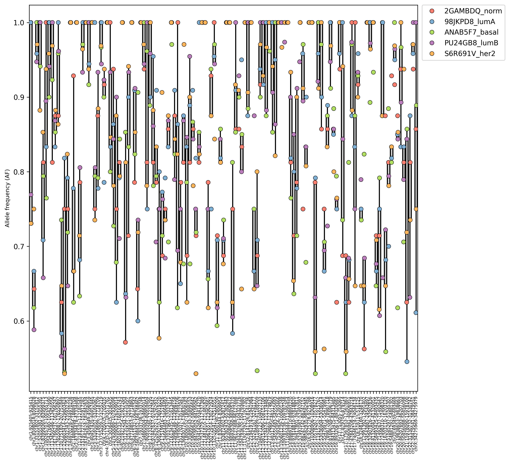
# plot violin plot for low AF set
# plt.figure(figsize=(10, 10), dpi=300)
# sns.violinplot(x='region_id', y='AF', data=low_af, color='lightgray', inner='quartile', linecolor='black', linewidth=0.5)
# plt.xticks(rotation=90, fontsize=2)
# sns.stripplot(x='region_id', y='AF', data=low_af, hue='sample_id', size=2.5, jitter=True, palette='deep')
# # plot legend outside of the plot
# plt.legend(bbox_to_anchor=(1.01, 1),borderaxespad=0, markerscale=2, fontsize=10)
# plt.xlabel(f'{motif_id} TF binding sites with allelic variants (median AF <= 0.5)', fontsize=8)
# plt.ylabel('Allele frequency (AF)', fontsize=8)
# plt.show()While we are at it, let’s plot the regions where there was at least one subtype with AF value == 0, which is filtered and saved into a file above.
# plot violin plot for sites with at least one subtype with AF == 0
plt.figure(figsize=(10, 10), dpi=300)
# sns.boxplot(x='region_id', y='AF', data=atleast_one_zero_af, color='gainsboro', linecolor='black', linewidth=1.5, showfliers=False)
plt.xticks(rotation=90, fontsize=2)
sns.stripplot(x='region_id', y='AF', data=atleast_one_zero_af, hue='sample_id', size=4, jitter=True, palette=springpastel)
# plot legend outside of the plot
plt.legend(bbox_to_anchor=(1.225, 1),borderaxespad=0, markerscale=2, fontsize=10)
plt.xlabel(f'{motif_id} TF binding sites with allelic variants (at least one subtype with AF = 0)', fontsize=8)
plt.ylabel('Allele frequency (AF)', fontsize=8)
plt.show()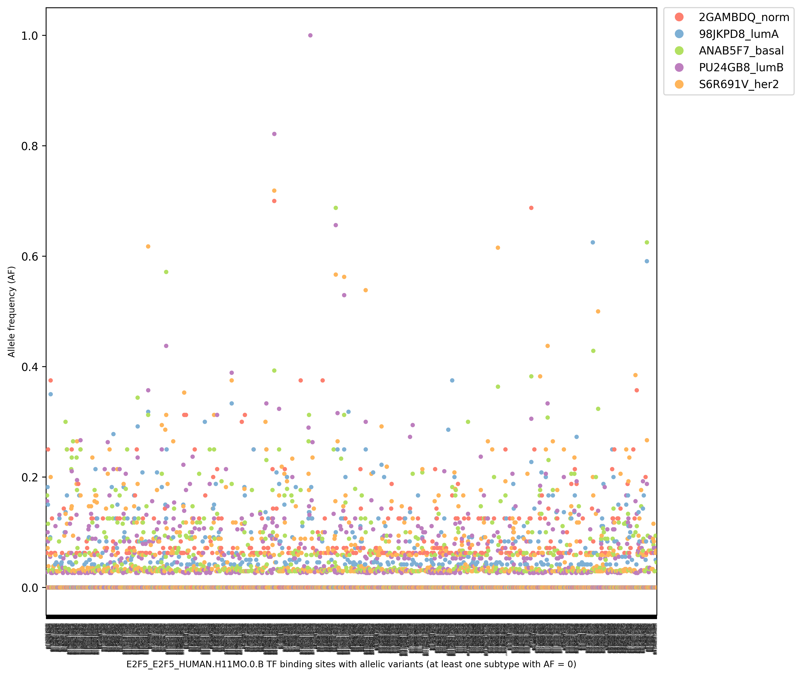
No clear pattern of enrichment of a specific subtype with high AF compared to the rest can be seen. We can use the subset of these to plot the distribution of the associated FPS values (unscaled).
# fig, ax = plt.subplots(2, 1, figsize=(10, 10), dpi=300, num=1, clear=True)
# sns.boxplot(x='region_id', y='AF', data=high_af, color='lightgray', linecolor='black', linewidth=1.5, showfliers=False)
# plt.xticks(rotation=90, fontsize=6)
# sns.stripplot(x='region_id', y='AF', data=high_af, hue='sample_id', size=6, jitter=True, palette=springpastel, linewidth=0.5, edgecolor='black')
# # plot legend outside of the plot
# plt.legend(bbox_to_anchor=(1.225, 1),borderaxespad=0, markerscale=1, fontsize=10)
# plt.xlabel('')
# plt.ylabel('Allele frequency (AF)', fontsize=8)
# sns.boxplot(x='region_id', y='AF', data=high_af, color='lightgray', linecolor='black', linewidth=1.5, showfliers=False, ax=ax[0])
# ax[0].tick_params(axis='x', rotation=90, labelsize=6)
# sns.stripplot(x='region_id', y='AF', data=high_af, hue='sample_id', size=6, jitter=True, palette=springpastel, linewidth=0.5, edgecolor='black', ax=ax[0])
# # plot legend outside of the plot
# ax[0].legend(bbox_to_anchor=(1.225, 1),borderaxespad=0, markerscale=1, fontsize=10)
# ax[0].set_xlabel('')
# ax[0].set_ylabel('Allele frequency (AF)', fontsize=8)
# # then plot the scaled FPS values for these sites
# # plt.subplot(2, 1, 2)
# # sns.boxplot(x='region_id', y='FPS_scaled', data=high_af, color='white', linecolor='black', linewidth=1.5, showfliers=False)
# # plt.xticks(rotation=90, fontsize=6)
# # sns.stripplot(x='region_id', y='FPS_scaled', data=high_af, hue='sample_id', size=6, jitter=True, palette=springpastel, legend=False, linewidth=0.5, edgecolor='black')
# # plt.xlabel(f'{motif_id} TF binding sites with allelic variants (at least one subtype with AF = 0)', fontsize=10)
# # plt.ylabel(f'Footprint scores (FPS) (min-max scaled)', fontsize=8)
# # plt.subplots_adjust(hspace=0.6)
# # plt.show()
# sns.boxplot(x='region_id', y='FPS_scaled', data=high_af, color='white', linecolor='black', linewidth=1.5, showfliers=False, ax=ax[1])
# ax[1].tick_params(axis='x', rotation=90, labelsize=6)
# sns.stripplot(x='region_id', y='FPS_scaled', data=high_af, hue='sample_id', size=6, jitter=True, palette=springpastel, legend=False, linewidth=0.5, edgecolor='black', ax=ax[1])
# ax[1].set_xlabel(f'{motif_id} TF binding sites with allelic variants (at least one subtype with AF = 0)', fontsize=10)
# ax[1].set_ylabel(f'Footprint scores (FPS) (min-max scaled)', fontsize=8)
# plt.subplots_adjust(hspace=0.6)
# plt.show()Some cancer subtypes appear to not have alternative alleles in certain sites but there is barely any pattern of enrichment in FPS values for any specific subtype.
What is the range of FPS variance in the subset dataframe?
high_af[['FPS_scaled_var', 'AF_var']].describe()| FPS_scaled_var | AF_var | |
|---|---|---|
| count | 6.350000e+02 | 635.000000 |
| mean | 3.486108e-04 | 0.005244 |
| std | 9.050190e-04 | 0.005475 |
| min | 2.684938e-07 | 0.000000 |
| 25% | 4.768179e-06 | 0.000683 |
| 50% | 1.861737e-05 | 0.003836 |
| 75% | 1.769064e-04 | 0.007752 |
| max | 5.369647e-03 | 0.022249 |
Let’s now apply thresholding onto the FPS scaled data to denoise the dataset even more. There are two strategies:
- Thresholding by computing the outlier threshold using the IQR method on
FPS_scaled_varvalues.This means we are only keeping regions that show extreme variance in FPS values across subtypes. - Thresholding by computing the mean of
FPS_scaledvalues across subtypes and keeping only regions that have such value above the mean at least in one subtype.
STRATEGY 1: IQR Method
# STRATEGY 1: subset high_af for sites with FPS_scaled_var > 75th percentile + 1.5 * IQR
iqr = high_af['FPS_scaled_var'].quantile(q=0.75) - high_af['FPS_scaled_var'].quantile(q=0.25)
high_af_fps_outliers = high_af[high_af['FPS_scaled_var'] > high_af['FPS_scaled_var'].quantile(q=0.75) + (1.5 * iqr)]
high_af_fps_outliers| region_id | sample_id | AF | FPS | FPS_scaled | FPS_var | FPS_scaled_var | AF_var | |
|---|---|---|---|---|---|---|---|---|
| 210 | chr1:161766237-161766247 | 2GAMBDQ_norm | 0.875000 | 0.76865 | 0.360174 | 0.022629 | 0.003065 | 0.000382 |
| 211 | chr1:161766237-161766247 | 98JKPD8_lumA | 0.833333 | 0.86762 | 0.382084 | 0.022629 | 0.003065 | 0.000382 |
| 212 | chr1:161766237-161766247 | ANAB5F7_basal | 0.852941 | 0.58857 | 0.301846 | 0.022629 | 0.003065 | 0.000382 |
| 213 | chr1:161766237-161766247 | PU24GB8_lumB | 0.868421 | 0.65888 | 0.308547 | 0.022629 | 0.003065 | 0.000382 |
| 214 | chr1:161766237-161766247 | S6R691V_her2 | 0.882353 | 0.48283 | 0.240372 | 0.022629 | 0.003065 | 0.000382 |
| ... | ... | ... | ... | ... | ... | ... | ... | ... |
| 3000 | chr20:19838653-19838663 | 2GAMBDQ_norm | 0.875000 | 0.01821 | 0.008533 | 0.001915 | 0.000518 | 0.011446 |
| 3001 | chr20:19838653-19838663 | 98JKPD8_lumA | 0.850000 | 0.01684 | 0.007416 | 0.001915 | 0.000518 | 0.011446 |
| 3002 | chr20:19838653-19838663 | ANAB5F7_basal | 0.617647 | 0.11351 | 0.058213 | 0.001915 | 0.000518 | 0.011446 |
| 3003 | chr20:19838653-19838663 | PU24GB8_lumB | 0.843750 | 0.01412 | 0.006612 | 0.001915 | 0.000518 | 0.011446 |
| 3004 | chr20:19838653-19838663 | S6R691V_her2 | 0.852941 | 0.01385 | 0.006895 | 0.001915 | 0.000518 | 0.011446 |
100 rows × 8 columns
# before discarding, grab all the regions where AF_var == 0; as we already filter out AF == 0, this would return regions where all subtypes have AF == 1, hence zero variance
# af_var_one = high_af_fps_outliers[high_af_fps_outliers['AF_var'] == 0]
# save to file
# af_var_one.to_csv(f'/home/msazizan/hyperspace/gatk-workflow/plotting/output-data/AF-FPS_regionsorted_full_longtable/{motif_id}_afps_longtable_raw_af_one_across_subtypes.tsv', sep='\t', index=False)# and then discard sites if it has AF_var == 0 (i.e. all subtypes have AF == 1, as we already filter out raw AF == 0)
high_nzaf_outliers = high_af_fps_outliers[high_af_fps_outliers['AF_var'] != 0]
high_nzaf_outliers| region_id | sample_id | AF | FPS | FPS_scaled | FPS_var | FPS_scaled_var | AF_var | |
|---|---|---|---|---|---|---|---|---|
| 210 | chr1:161766237-161766247 | 2GAMBDQ_norm | 0.875000 | 0.76865 | 0.360174 | 0.022629 | 0.003065 | 0.000382 |
| 211 | chr1:161766237-161766247 | 98JKPD8_lumA | 0.833333 | 0.86762 | 0.382084 | 0.022629 | 0.003065 | 0.000382 |
| 212 | chr1:161766237-161766247 | ANAB5F7_basal | 0.852941 | 0.58857 | 0.301846 | 0.022629 | 0.003065 | 0.000382 |
| 213 | chr1:161766237-161766247 | PU24GB8_lumB | 0.868421 | 0.65888 | 0.308547 | 0.022629 | 0.003065 | 0.000382 |
| 214 | chr1:161766237-161766247 | S6R691V_her2 | 0.882353 | 0.48283 | 0.240372 | 0.022629 | 0.003065 | 0.000382 |
| ... | ... | ... | ... | ... | ... | ... | ... | ... |
| 3000 | chr20:19838653-19838663 | 2GAMBDQ_norm | 0.875000 | 0.01821 | 0.008533 | 0.001915 | 0.000518 | 0.011446 |
| 3001 | chr20:19838653-19838663 | 98JKPD8_lumA | 0.850000 | 0.01684 | 0.007416 | 0.001915 | 0.000518 | 0.011446 |
| 3002 | chr20:19838653-19838663 | ANAB5F7_basal | 0.617647 | 0.11351 | 0.058213 | 0.001915 | 0.000518 | 0.011446 |
| 3003 | chr20:19838653-19838663 | PU24GB8_lumB | 0.843750 | 0.01412 | 0.006612 | 0.001915 | 0.000518 | 0.011446 |
| 3004 | chr20:19838653-19838663 | S6R691V_her2 | 0.852941 | 0.01385 | 0.006895 | 0.001915 | 0.000518 | 0.011446 |
80 rows × 8 columns
# create color dictionary
dutchfield_colordict = {'S6R691V_her2': "#e60049", 'ANAB5F7_basal': "#0bb4ff", '98JKPD8_lumA': "#87bc45", 'PU24GB8_lumB': "#ef9b20", '2GAMBDQ_norm': "#b33dc6"}
plt.figure(figsize=(10, 10), dpi=300)
# specify subplot
plt.subplot(4, 1, 1)
sns.boxplot(x='region_id', y='AF', data=high_nzaf_outliers, color='whitesmoke', linecolor='black', showfliers=False)
sns.stripplot(x='region_id', y='AF', data=high_nzaf_outliers, hue='sample_id', palette=dutchfield_colordict, size=4, jitter=True, linewidth=0.5, edgecolor='black')
plt.xticks(rotation=90, fontsize=4)
plt.xlabel('')
plt.ylabel('AF per site', fontsize=10)
# place legend outside of the plot
plt.legend(bbox_to_anchor=(1.01, 1),borderaxespad=0, markerscale=2, fontsize=10)
plt.subplot(4, 1, 2)
sns.barplot(x='region_id', y='AF_var', data=high_nzaf_outliers, color='darkslateblue', edgecolor='black')
plt.xticks(rotation=90, fontsize=4)
plt.xlabel('')
plt.ylabel('AF variance', fontsize=10)
plt.subplot(4, 1, 3)
sns.boxplot(x='region_id', y='FPS_scaled', data=high_nzaf_outliers, color='whitesmoke', linecolor='black', showfliers=False)
sns.stripplot(x='region_id', y='FPS_scaled', data=high_nzaf_outliers, hue='sample_id', palette=dutchfield_colordict, size=4, jitter=True, legend=False, linewidth=0.5, edgecolor='black')
plt.xticks(rotation=90, fontsize=4)
plt.xlabel('')
plt.ylabel('Scaled FPS per site', fontsize=10)
plt.subplot(4, 1, 4)
sns.barplot(x='region_id', y='FPS_scaled_var', data=high_nzaf_outliers, color='darkslateblue', edgecolor='black')
plt.xticks(rotation=90, fontsize=4)
plt.xlabel(f'{motif_id} TF binding sites with allelic variants (AF > 0.5 in all subtypes)', fontsize=10)
plt.ylabel('FPS Variance', fontsize=10)
plt.subplots_adjust(hspace=0.8)
plt.tight_layout()
plt.show()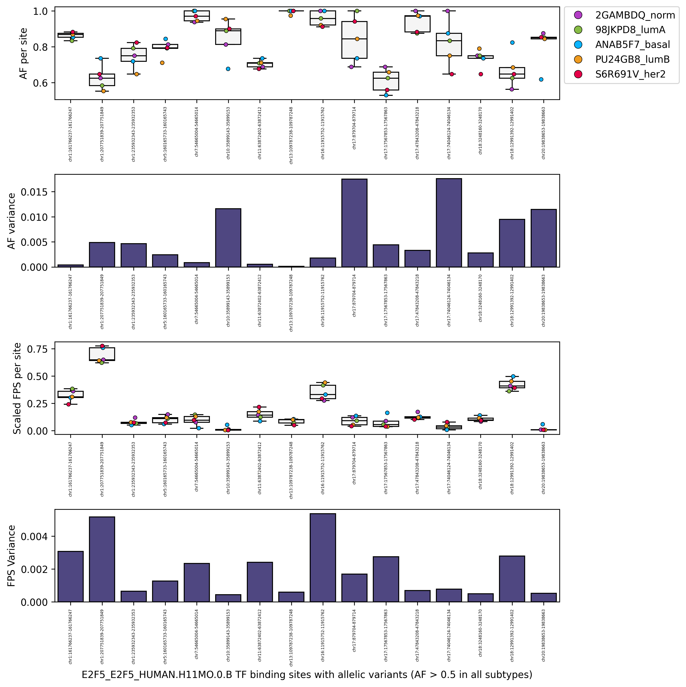
STRATEGY 2: Thresholding by central FPS value
First, let’s assess whether median or mean is a better measure of central tendency for the FPS values.
# strategy 2: subset high_af for FPS_scaled > median (of the unsplit dataframe)
# calculate global median of the FPS scaled for the unsplit dataframe
mf_df_s2 = mf_df.copy()
mf_df_s2| region_id | sample_id | AF | FPS | FPS_scaled | FPS_var | FPS_scaled_var | AF_var | |
|---|---|---|---|---|---|---|---|---|
| 0 | chr1:925405-925415 | 2GAMBDQ_norm | 1.000000 | 0.05586 | 0.026175 | 0.000659 | 0.000134 | 0.019970 |
| 1 | chr1:925405-925415 | 98JKPD8_lumA | 1.000000 | 0.09540 | 0.042012 | 0.000659 | 0.000134 | 0.019970 |
| 2 | chr1:925405-925415 | ANAB5F7_basal | 0.730769 | 0.03670 | 0.018821 | 0.000659 | 0.000134 | 0.019970 |
| 3 | chr1:925405-925415 | PU24GB8_lumB | 0.769231 | 0.05082 | 0.023798 | 0.000659 | 0.000134 | 0.019970 |
| 4 | chr1:925405-925415 | S6R691V_her2 | 0.730769 | 0.09011 | 0.044860 | 0.000659 | 0.000134 | 0.019970 |
| ... | ... | ... | ... | ... | ... | ... | ... | ... |
| 3230 | chrX:150849074-150849084 | 2GAMBDQ_norm | 0.750000 | 0.20522 | 0.096162 | 0.013487 | 0.002941 | 0.008072 |
| 3231 | chrX:150849074-150849084 | 98JKPD8_lumA | 0.500000 | 0.34392 | 0.151456 | 0.013487 | 0.002941 | 0.008072 |
| 3232 | chrX:150849074-150849084 | ANAB5F7_basal | 0.600000 | 0.07363 | 0.037761 | 0.013487 | 0.002941 | 0.008072 |
| 3233 | chrX:150849074-150849084 | PU24GB8_lumB | 0.605263 | 0.24735 | 0.115831 | 0.013487 | 0.002941 | 0.008072 |
| 3234 | chrX:150849074-150849084 | S6R691V_her2 | 0.588235 | 0.35995 | 0.179197 | 0.013487 | 0.002941 | 0.008072 |
3235 rows × 8 columns
fps_scaled_global_median = mf_df_s2['FPS_scaled'].median()
print(fps_scaled_global_median)
fps_scaled_global_mean = mf_df_s2['FPS_scaled'].mean()
print(fps_scaled_global_mean)0.013078051271958801
0.04597799805605853# plot fps_scaled distribution
plt.figure(figsize=(10, 10), dpi=300)
plt.subplot(2, 1, 1)
sns.kdeplot(data=mf_df_s2, x="AF", hue="sample_id", fill=False, common_norm=False, alpha=.5, linewidth=1)
plt.axvline(x=mf_df_s2['AF'].mean(), color='red', linestyle='--')
plt.text(mf_df_s2['AF'].mean(), plt.gca().get_ylim()[1]*0.9, 'mean', fontsize=10)
plt.axvline(x=mf_df_s2['AF'].median(), color='blue', linestyle='--')
plt.text(mf_df_s2['AF'].median(), plt.gca().get_ylim()[1]*0.8, 'median', fontsize=10)
plt.subplot(2, 1, 2)
sns.kdeplot(data=mf_df_s2, x="FPS_scaled", hue="sample_id", fill=False, common_norm=False, alpha=.5, linewidth=1)
plt.axvline(x=fps_scaled_global_mean, color='red', linestyle='--')
plt.text(fps_scaled_global_mean, plt.gca().get_ylim()[1]*0.9, 'mean', fontsize=10)
plt.axvline(x=fps_scaled_global_median, color='blue', linestyle='--')
plt.text(fps_scaled_global_median, plt.gca().get_ylim()[1]*0.8, 'median', fontsize=10)
plt.tight_layout()
plt.show()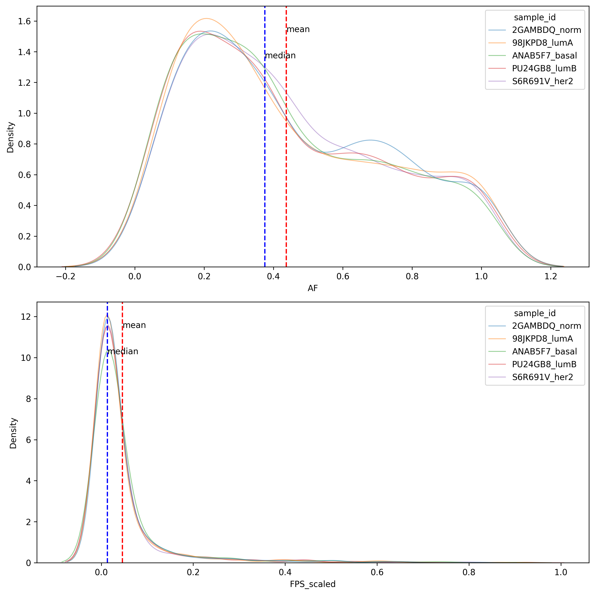
It seems like using mean is more stringent than using median to filter out noise. Let’s use the mean.
Now we can filter the dataframes to retain only rows that have FPS_scaled values above the mean.
# subset region_id with FPS_scaled > mean
# first subset per region_id and then filter for those with FPS_scaled > mean for any subtype
high_af_fpsgtmean_any = high_af.groupby('region_id').filter(lambda x: (x['FPS_scaled'] > fps_scaled_global_mean).any())
high_af_fpsgtmean_any| region_id | sample_id | AF | FPS | FPS_scaled | FPS_var | FPS_scaled_var | AF_var | |
|---|---|---|---|---|---|---|---|---|
| 110 | chr1:52055381-52055391 | 2GAMBDQ_norm | 1.000000 | 0.17739 | 0.083121 | 0.001060 | 0.000310 | 0.002768 |
| 111 | chr1:52055381-52055391 | 98JKPD8_lumA | 1.000000 | 0.25634 | 0.112887 | 0.001060 | 0.000310 | 0.002768 |
| 112 | chr1:52055381-52055391 | ANAB5F7_basal | 0.941176 | 0.24529 | 0.125796 | 0.001060 | 0.000310 | 0.002768 |
| 113 | chr1:52055381-52055391 | PU24GB8_lumB | 1.000000 | 0.21208 | 0.099315 | 0.001060 | 0.000310 | 0.002768 |
| 114 | chr1:52055381-52055391 | S6R691V_her2 | 0.882353 | 0.24599 | 0.122464 | 0.001060 | 0.000310 | 0.002768 |
| ... | ... | ... | ... | ... | ... | ... | ... | ... |
| 3145 | chr22:31530732-31530742 | 2GAMBDQ_norm | 0.812500 | 0.21078 | 0.098767 | 0.000238 | 0.000146 | 0.008418 |
| 3146 | chr22:31530732-31530742 | 98JKPD8_lumA | 0.875000 | 0.21306 | 0.093828 | 0.000238 | 0.000146 | 0.008418 |
| 3147 | chr22:31530732-31530742 | ANAB5F7_basal | 0.735294 | 0.24335 | 0.124801 | 0.000238 | 0.000146 | 0.008418 |
| 3148 | chr22:31530732-31530742 | PU24GB8_lumB | 0.631579 | 0.21487 | 0.100621 | 0.000238 | 0.000146 | 0.008418 |
| 3149 | chr22:31530732-31530742 | S6R691V_her2 | 0.735294 | 0.20292 | 0.101022 | 0.000238 | 0.000146 | 0.008418 |
165 rows × 8 columns
# create color dictionary
dutchfield_colordict = {'S6R691V_her2': "#e60049", 'ANAB5F7_basal': "#0bb4ff", '98JKPD8_lumA': "#87bc45", 'PU24GB8_lumB': "#ef9b20", '2GAMBDQ_norm': "#b33dc6"}
plt.figure(figsize=(10, 10), dpi=300)
# specify subplot
plt.subplot(4, 1, 1)
sns.boxplot(x='region_id', y='AF', data=high_af_fpsgtmean_any, color='whitesmoke', linecolor='black', showfliers=False)
sns.stripplot(x='region_id', y='AF', data=high_af_fpsgtmean_any, hue='sample_id', palette=dutchfield_colordict, size=4, jitter=True, linewidth=0.5, edgecolor='black')
plt.xticks(ticks=plt.xticks()[0], labels=[])
plt.xlabel('')
ylabel = textwrap.fill('AF per site', width=15)
plt.ylabel(ylabel, fontsize=10)
# place legend outside of the plot
plt.legend(bbox_to_anchor=(1.01, 1),borderaxespad=0, markerscale=2, fontsize=10)
plt.subplot(4, 1, 2)
sns.barplot(x='region_id', y='AF_var', data=high_af_fpsgtmean_any, color='darkslateblue', edgecolor='black')
plt.xticks(ticks=plt.xticks()[0], labels=[])
plt.xlabel('')
ylabel = textwrap.fill('AF variance', width=15)
plt.ylabel(ylabel, fontsize=10)
plt.subplot(4, 1, 3)
sns.boxplot(x='region_id', y='FPS_scaled', data=high_af_fpsgtmean_any, color='whitesmoke', linecolor='black', showfliers=False)
sns.stripplot(x='region_id', y='FPS_scaled', data=high_af_fpsgtmean_any, hue='sample_id', palette=dutchfield_colordict, size=4, jitter=True, legend=False, linewidth=0.5, edgecolor='black')
# plot horizontal line at fps_scaled_global_median
plt.axhline(y=fps_scaled_global_mean, color='black', linestyle='--')
plt.xticks(ticks=plt.xticks()[0], labels=[])
plt.xlabel('')
ylabel = textwrap.fill('Scaled FPS per site', width=15)
plt.ylabel(ylabel, fontsize=10)
plt.subplot(4, 1, 4)
sns.barplot(x='region_id', y='FPS_scaled_var', data=high_af_fpsgtmean_any, color='darkslateblue', edgecolor='black')
plt.xticks(rotation=90, fontsize=4)
plt.xlabel(f'{motif_id} TF binding sites with allelic variants (AF > 0.5 across subtypes)', fontsize=10)
plt.ylabel('Scaled FPS variance', fontsize=10)
plt.subplots_adjust(hspace=0.05)
plt.show()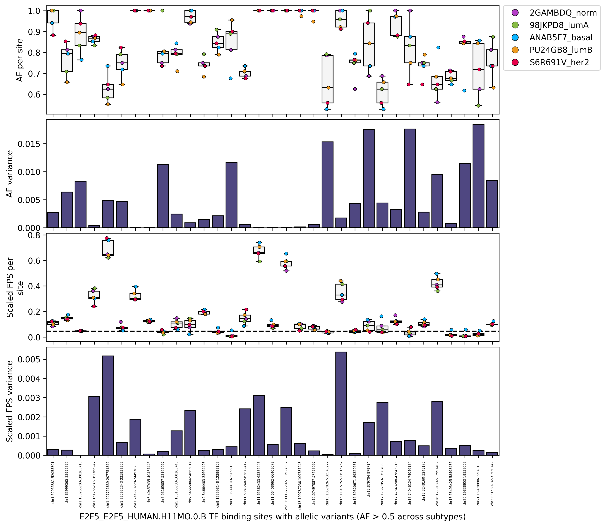
‘any’ FPS scaled value does not seem to really retain any highly variable sites across subtypes (that spans across the mean value in the plot) so let’s retain only sites that have all FPS scaled values above the mean.
# subset region_id with FPS_scaled > mean
# subset per region_id and then filter for those with FPS_scaled > mean for all subtype
high_af_fpsgtmean_all = high_af.groupby('region_id').filter(lambda x: (x['FPS_scaled'] > fps_scaled_global_mean).all())
high_af_fpsgtmean_all| region_id | sample_id | AF | FPS | FPS_scaled | FPS_var | FPS_scaled_var | AF_var | |
|---|---|---|---|---|---|---|---|---|
| 110 | chr1:52055381-52055391 | 2GAMBDQ_norm | 1.000000 | 0.17739 | 0.083121 | 0.001060 | 0.000310 | 0.002768 |
| 111 | chr1:52055381-52055391 | 98JKPD8_lumA | 1.000000 | 0.25634 | 0.112887 | 0.001060 | 0.000310 | 0.002768 |
| 112 | chr1:52055381-52055391 | ANAB5F7_basal | 0.941176 | 0.24529 | 0.125796 | 0.001060 | 0.000310 | 0.002768 |
| 113 | chr1:52055381-52055391 | PU24GB8_lumB | 1.000000 | 0.21208 | 0.099315 | 0.001060 | 0.000310 | 0.002768 |
| 114 | chr1:52055381-52055391 | S6R691V_her2 | 0.882353 | 0.24599 | 0.122464 | 0.001060 | 0.000310 | 0.002768 |
| ... | ... | ... | ... | ... | ... | ... | ... | ... |
| 3145 | chr22:31530732-31530742 | 2GAMBDQ_norm | 0.812500 | 0.21078 | 0.098767 | 0.000238 | 0.000146 | 0.008418 |
| 3146 | chr22:31530732-31530742 | 98JKPD8_lumA | 0.875000 | 0.21306 | 0.093828 | 0.000238 | 0.000146 | 0.008418 |
| 3147 | chr22:31530732-31530742 | ANAB5F7_basal | 0.735294 | 0.24335 | 0.124801 | 0.000238 | 0.000146 | 0.008418 |
| 3148 | chr22:31530732-31530742 | PU24GB8_lumB | 0.631579 | 0.21487 | 0.100621 | 0.000238 | 0.000146 | 0.008418 |
| 3149 | chr22:31530732-31530742 | S6R691V_her2 | 0.735294 | 0.20292 | 0.101022 | 0.000238 | 0.000146 | 0.008418 |
100 rows × 8 columns
dutchfield_colordict = {'S6R691V_her2': "#e60049", 'ANAB5F7_basal': "#0bb4ff", '98JKPD8_lumA': "#87bc45", 'PU24GB8_lumB': "#ef9b20", '2GAMBDQ_norm': "#b33dc6"}
plt.figure(figsize=(10, 10), dpi=300)
# specify subplot
plt.subplot(4, 1, 1)
sns.boxplot(x='region_id', y='AF', data=high_af_fpsgtmean_all, color='whitesmoke', linecolor='black', showfliers=False)
sns.stripplot(x='region_id', y='AF', data=high_af_fpsgtmean_all, hue='sample_id', palette=dutchfield_colordict, size=4, jitter=True, linewidth=0.5, edgecolor='black')
plt.xticks(ticks=plt.xticks()[0], labels=[])
plt.xlabel('')
ylabel = textwrap.fill('AF per site', width=15)
plt.ylabel(ylabel, fontsize=10)
# place legend outside of the plot
plt.legend(bbox_to_anchor=(1.01, 1),borderaxespad=0, markerscale=2, fontsize=10)
plt.subplot(4, 1, 2)
sns.barplot(x='region_id', y='AF_var', data=high_af_fpsgtmean_all, color='darkslateblue', edgecolor='black')
plt.xticks(ticks=plt.xticks()[0], labels=[])
plt.xlabel('')
ylabel = textwrap.fill('AF variance', width=15)
plt.ylabel(ylabel, fontsize=10)
plt.subplot(4, 1, 3)
sns.boxplot(x='region_id', y='FPS_scaled', data=high_af_fpsgtmean_all, color='whitesmoke', linecolor='black', showfliers=False)
sns.stripplot(x='region_id', y='FPS_scaled', data=high_af_fpsgtmean_all, hue='sample_id', palette=dutchfield_colordict, size=4, jitter=True, legend=False, linewidth=0.5, edgecolor='black')
# plot horizontal line at fps_scaled_global_mean
plt.axhline(y=fps_scaled_global_mean, color='black', linestyle='--')
plt.xticks(ticks=plt.xticks()[0], labels=[])
plt.xlabel('')
ylabel = textwrap.fill('Scaled FPS per site', width=15)
plt.ylabel(ylabel, fontsize=10)
plt.subplot(4, 1, 4)
sns.barplot(x='region_id', y='FPS_scaled_var', data=high_af_fpsgtmean_all, color='darkslateblue', edgecolor='black')
plt.xticks(rotation=90, fontsize=4)
plt.xlabel(f'{motif_id} TF binding sites with allelic variants (median AF > 0.5)', fontsize=10)
plt.ylabel('Scaled FPS variance', fontsize=10)
plt.subplots_adjust(hspace=0.05)
plt.show()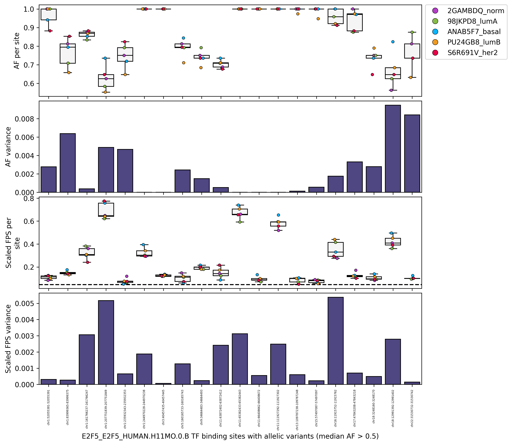
Now that it looks pretty valid, we would also like to subset the unsplit dataframe for FPS values that are below the mean across all subtypes with high AF values as well as FPS values that are above and below the mean across all subtypes with low AF values.
# subset per region_id and then filter for those with FPS_scaled < mean for all subtype
high_af_fpsltmean_all = high_af.groupby('region_id').filter(lambda x: (x['FPS_scaled'] <= fps_scaled_global_mean).all())
high_af_fpsltmean_all| region_id | sample_id | AF | FPS | FPS_scaled | FPS_var | FPS_scaled_var | AF_var | |
|---|---|---|---|---|---|---|---|---|
| 0 | chr1:925405-925415 | 2GAMBDQ_norm | 1.000000 | 0.05586 | 0.026175 | 0.000659 | 0.000134 | 0.019970 |
| 1 | chr1:925405-925415 | 98JKPD8_lumA | 1.000000 | 0.09540 | 0.042012 | 0.000659 | 0.000134 | 0.019970 |
| 2 | chr1:925405-925415 | ANAB5F7_basal | 0.730769 | 0.03670 | 0.018821 | 0.000659 | 0.000134 | 0.019970 |
| 3 | chr1:925405-925415 | PU24GB8_lumB | 0.769231 | 0.05082 | 0.023798 | 0.000659 | 0.000134 | 0.019970 |
| 4 | chr1:925405-925415 | S6R691V_her2 | 0.730769 | 0.09011 | 0.044860 | 0.000659 | 0.000134 | 0.019970 |
| ... | ... | ... | ... | ... | ... | ... | ... | ... |
| 3200 | chrX:34275969-34275979 | 2GAMBDQ_norm | 0.857143 | 0.02658 | 0.012455 | 0.000088 | 0.000019 | 0.021762 |
| 3201 | chrX:34275969-34275979 | 98JKPD8_lumA | 0.611111 | 0.03378 | 0.014876 | 0.000088 | 0.000019 | 0.021762 |
| 3202 | chrX:34275969-34275979 | ANAB5F7_basal | 0.888889 | 0.01175 | 0.006026 | 0.000088 | 0.000019 | 0.021762 |
| 3203 | chrX:34275969-34275979 | PU24GB8_lumB | 1.000000 | 0.02894 | 0.013552 | 0.000088 | 0.000019 | 0.021762 |
| 3204 | chrX:34275969-34275979 | S6R691V_her2 | 0.750000 | 0.03548 | 0.017663 | 0.000088 | 0.000019 | 0.021762 |
470 rows × 8 columns
# subset per region_id and then filter for those with FPS_scaled < mean for all subtype
low_af_fpsltmean_all = low_af.groupby('region_id').filter(lambda x: (x['FPS_scaled'] <= fps_scaled_global_mean).all())
low_af_fpsltmean_all| region_id | sample_id | AF | FPS | FPS_scaled | FPS_var | FPS_scaled_var | AF_var | |
|---|---|---|---|---|---|---|---|---|
| 10 | chr1:1225277-1225287 | 2GAMBDQ_norm | 0.071429 | 0.02657 | 0.012450 | 0.000127 | 0.000039 | 0.000139 |
| 11 | chr1:1225277-1225287 | 98JKPD8_lumA | 0.090909 | 0.01792 | 0.007892 | 0.000127 | 0.000039 | 0.000139 |
| 12 | chr1:1225277-1225287 | ANAB5F7_basal | 0.062500 | 0.04624 | 0.023714 | 0.000127 | 0.000039 | 0.000139 |
| 13 | chr1:1225277-1225287 | PU24GB8_lumB | 0.078947 | 0.01957 | 0.009164 | 0.000127 | 0.000039 | 0.000139 |
| 14 | chr1:1225277-1225287 | S6R691V_her2 | 0.088235 | 0.02729 | 0.013586 | 0.000127 | 0.000039 | 0.000139 |
| ... | ... | ... | ... | ... | ... | ... | ... | ... |
| 3185 | chr22:47019709-47019719 | 2GAMBDQ_norm | 0.500000 | 0.01748 | 0.008191 | 0.000007 | 0.000002 | 0.023916 |
| 3186 | chr22:47019709-47019719 | 98JKPD8_lumA | 0.250000 | 0.01116 | 0.004915 | 0.000007 | 0.000002 | 0.023916 |
| 3187 | chr22:47019709-47019719 | ANAB5F7_basal | 0.176471 | 0.01336 | 0.006852 | 0.000007 | 0.000002 | 0.023916 |
| 3188 | chr22:47019709-47019719 | PU24GB8_lumB | 0.083333 | 0.01285 | 0.006018 | 0.000007 | 0.000002 | 0.023916 |
| 3189 | chr22:47019709-47019719 | S6R691V_her2 | 0.250000 | 0.01685 | 0.008389 | 0.000007 | 0.000002 | 0.023916 |
1015 rows × 8 columns
# subset per region_id and then filter for those with FPS_scaled < mean for all subtype
low_af_fpsgtmean_all = low_af.groupby('region_id').filter(lambda x: (x['FPS_scaled'] > fps_scaled_global_mean).all())
low_af_fpsgtmean_all| region_id | sample_id | AF | FPS | FPS_scaled | FPS_var | FPS_scaled_var | AF_var | |
|---|---|---|---|---|---|---|---|---|
| 15 | chr1:3900825-3900835 | 2GAMBDQ_norm | 0.125000 | 1.76533 | 0.827197 | 0.023987 | 0.002421 | 0.002187 |
| 16 | chr1:3900825-3900835 | 98JKPD8_lumA | 0.041667 | 1.95879 | 0.862614 | 0.023987 | 0.002421 | 0.002187 |
| 17 | chr1:3900825-3900835 | ANAB5F7_basal | 0.147059 | 1.73899 | 0.891835 | 0.023987 | 0.002421 | 0.002187 |
| 18 | chr1:3900825-3900835 | PU24GB8_lumB | 0.052632 | 1.97913 | 0.926806 | 0.023987 | 0.002421 | 0.002187 |
| 19 | chr1:3900825-3900835 | S6R691V_her2 | 0.117647 | 1.61461 | 0.803816 | 0.023987 | 0.002421 | 0.002187 |
| ... | ... | ... | ... | ... | ... | ... | ... | ... |
| 3170 | chr22:41946757-41946767 | 2GAMBDQ_norm | 0.062500 | 0.49960 | 0.234102 | 0.003915 | 0.001714 | 0.002468 |
| 3171 | chr22:41946757-41946767 | 98JKPD8_lumA | 0.166667 | 0.44847 | 0.197498 | 0.003915 | 0.001714 | 0.002468 |
| 3172 | chr22:41946757-41946767 | ANAB5F7_basal | 0.147059 | 0.60331 | 0.309406 | 0.003915 | 0.001714 | 0.002468 |
| 3173 | chr22:41946757-41946767 | PU24GB8_lumB | 0.131579 | 0.51443 | 0.240902 | 0.003915 | 0.001714 | 0.002468 |
| 3174 | chr22:41946757-41946767 | S6R691V_her2 | 0.058824 | 0.45316 | 0.225601 | 0.003915 | 0.001714 | 0.002468 |
270 rows × 8 columns
Now we can sort the dataframe by region_id based on the descending order of FPS_scaled_var values.
### strat 1 dataframe
high_af_uniq_reg = high_nzaf_outliers[['region_id', 'AF_var', 'FPS_scaled_var']].drop_duplicates()
# sort the region_id in the filtered high_af dataframe based on descending order of FPS_scaled_var
fpsvar_uniqsort = high_af_uniq_reg.sort_values(by='FPS_scaled_var', ascending=False)
# extract the region_id from the high_af_fps_var_df_uniqsort dataframe
sorted_region_ids = fpsvar_uniqsort['region_id']
# Change 'region_id' to a categorical variable with the categories ordered by 'sorted_region_ids'
df_copy = high_nzaf_outliers.copy()
df_copy['region_id'] = pd.Categorical(high_nzaf_outliers['region_id'], categories=sorted_region_ids, ordered=True)
# Filter the DataFrame
high_nzaf_filtered = df_copy[df_copy['region_id'].isin(sorted_region_ids)]
# Sort the DataFrame by 'region_id'
high_nzaf_filtered = high_nzaf_filtered.sort_values('region_id')
high_nzaf_filtered| region_id | sample_id | AF | FPS | FPS_scaled | FPS_var | FPS_scaled_var | AF_var | |
|---|---|---|---|---|---|---|---|---|
| 2495 | chr16:11915752-11915762 | 2GAMBDQ_norm | 1.000000 | 0.58711 | 0.275108 | 0.033973 | 0.005370 | 0.001758 |
| 2496 | chr16:11915752-11915762 | 98JKPD8_lumA | 0.958333 | 0.94151 | 0.414623 | 0.033973 | 0.005370 | 0.001758 |
| 2497 | chr16:11915752-11915762 | ANAB5F7_basal | 1.000000 | 0.64275 | 0.329632 | 0.033973 | 0.005370 | 0.001758 |
| 2498 | chr16:11915752-11915762 | PU24GB8_lumB | 0.921053 | 0.93861 | 0.439541 | 0.033973 | 0.005370 | 0.001758 |
| 2499 | chr16:11915752-11915762 | S6R691V_her2 | 0.911765 | 0.58832 | 0.292889 | 0.033973 | 0.005370 | 0.001758 |
| ... | ... | ... | ... | ... | ... | ... | ... | ... |
| 1758 | chr10:35899143-35899153 | PU24GB8_lumB | 0.954545 | 0.01006 | 0.004711 | 0.001626 | 0.000437 | 0.011600 |
| 1757 | chr10:35899143-35899153 | ANAB5F7_basal | 0.676471 | 0.10266 | 0.052649 | 0.001626 | 0.000437 | 0.011600 |
| 1756 | chr10:35899143-35899153 | 98JKPD8_lumA | 0.888889 | 0.01277 | 0.005624 | 0.001626 | 0.000437 | 0.011600 |
| 1755 | chr10:35899143-35899153 | 2GAMBDQ_norm | 0.812500 | 0.02357 | 0.011044 | 0.001626 | 0.000437 | 0.011600 |
| 1759 | chr10:35899143-35899153 | S6R691V_her2 | 0.900000 | 0.00773 | 0.003848 | 0.001626 | 0.000437 | 0.011600 |
80 rows × 8 columns
# strat 2
uniq_reg = high_af_fpsgtmean_all[['region_id', 'AF_var', 'FPS_scaled_var']].drop_duplicates()
# sort the region_id in the filtered high_af dataframe based on descending order of FPS_scaled_var
fpsvar_uniqsort = uniq_reg.sort_values(by='FPS_scaled_var', ascending=False)
# extract the region_id from the high_af_fps_var_df_uniqsort dataframe
sorted_region_ids = fpsvar_uniqsort['region_id']
# Change 'region_id' to a categorical variable with the categories ordered by 'sorted_region_ids'
df_copy = high_af_fpsgtmean_all.copy()
df_copy['region_id'] = pd.Categorical(high_af_fpsgtmean_all['region_id'], categories=sorted_region_ids, ordered=True)
# Filter the DataFrame
high_af_fpsgtmean_filt = df_copy[df_copy['region_id'].isin(sorted_region_ids)]
# Sort the DataFrame by 'region_id'
high_af_fpsgtmean_filtered = high_af_fpsgtmean_filt.sort_values('region_id')
uniq_reg = low_af_fpsgtmean_all[['region_id', 'AF_var', 'FPS_scaled_var']].drop_duplicates()
# sort the region_id in the filtered high_af dataframe based on descending order of FPS_scaled_var
fpsvar_uniqsort = uniq_reg.sort_values(by='FPS_scaled_var', ascending=False)
# extract the region_id from the high_af_fps_var_df_uniqsort dataframe
sorted_region_ids = fpsvar_uniqsort['region_id']
# Change 'region_id' to a categorical variable with the categories ordered by 'sorted_region_ids'
df_copy = low_af_fpsgtmean_all.copy()
df_copy['region_id'] = pd.Categorical(low_af_fpsgtmean_all['region_id'], categories=sorted_region_ids, ordered=True)
# Filter the DataFrame
low_af_fpsgtmean_filt = df_copy[df_copy['region_id'].isin(sorted_region_ids)]
# Sort the DataFrame by 'region_id'
low_af_fpsgtmean_filtered = low_af_fpsgtmean_filt.sort_values('region_id')
uniq_reg = high_af_fpsltmean_all[['region_id', 'AF_var', 'FPS_scaled_var']].drop_duplicates()
# sort the region_id in the filtered high_af dataframe based on descending order of FPS_scaled_var
fpsvar_uniqsort = uniq_reg.sort_values(by='FPS_scaled_var', ascending=False)
# extract the region_id from the high_af_fps_var_df_uniqsort dataframe
sorted_region_ids = fpsvar_uniqsort['region_id']
# Change 'region_id' to a categorical variable with the categories ordered by 'sorted_region_ids'
df_copy = high_af_fpsltmean_all.copy()
df_copy['region_id'] = pd.Categorical(high_af_fpsltmean_all['region_id'], categories=sorted_region_ids, ordered=True)
# Filter the DataFrame
high_af_fpsltmean_filt = df_copy[df_copy['region_id'].isin(sorted_region_ids)]
# Sort the DataFrame by 'region_id'
high_af_fpsltmean_filtered = high_af_fpsltmean_filt.sort_values('region_id')
uniq_reg = low_af_fpsltmean_all[['region_id', 'AF_var', 'FPS_scaled_var']].drop_duplicates()
# sort the region_id in the filtered high_af dataframe based on descending order of FPS_scaled_var
fpsvar_uniqsort = uniq_reg.sort_values(by='FPS_scaled_var', ascending=False)
# extract the region_id from the high_af_fps_var_df_uniqsort dataframe
sorted_region_ids = fpsvar_uniqsort['region_id']
# Change 'region_id' to a categorical variable with the categories ordered by 'sorted_region_ids'
df_copy = low_af_fpsltmean_all.copy()
df_copy['region_id'] = pd.Categorical(low_af_fpsltmean_all['region_id'], categories=sorted_region_ids, ordered=True)
# Filter the DataFrame
low_af_fpsltmean_filt = df_copy[df_copy['region_id'].isin(sorted_region_ids)]
# Sort the DataFrame by 'region_id'
low_af_fpsltmean_filtered = low_af_fpsltmean_filt.sort_values('region_id')Next, sort the sample_id values per each unique region_id by a specific order. This order is based on the lexicographic order of the sample_id values in the original matrix.
# get unique sample_id values into a list to define a categorical order
datasets = high_nzaf_filtered['sample_id'].unique().tolist()
datasets = sorted(datasets)
# Create a categorical variable with ordered categories
dataset_copy = high_nzaf_filtered.copy()
dataset_copy['sample_id'] = pd.Categorical(dataset_copy['sample_id'], categories=datasets, ordered=True)
# Sort 'sample_id' within each 'region_id'
high_nzaf_filtsorted = dataset_copy.groupby('region_id', sort=False, observed=False).apply(lambda x: x.sort_values('sample_id')).reset_index(drop=True)
# do the same for high_af_fpsgtmean_all, low_af_fpsgtmean_all, high_af_fpsltmean_all, low_af_fpsltmean_all
dataset_copy = high_af_fpsgtmean_filtered.copy()
dataset_copy['sample_id'] = pd.Categorical(dataset_copy['sample_id'], categories=datasets, ordered=True)
high_af_fpsgtmean_filtsorted = dataset_copy.groupby('region_id', sort=False, observed=False).apply(lambda x: x.sort_values('sample_id')).reset_index(drop=True)
dataset_copy = low_af_fpsgtmean_filtered.copy()
dataset_copy['sample_id'] = pd.Categorical(dataset_copy['sample_id'], categories=datasets, ordered=True)
low_af_fpsgtmean_filtsorted = dataset_copy.groupby('region_id', sort=False, observed=False).apply(lambda x: x.sort_values('sample_id')).reset_index(drop=True)
dataset_copy = high_af_fpsltmean_filtered.copy()
dataset_copy['sample_id'] = pd.Categorical(dataset_copy['sample_id'], categories=datasets, ordered=True)
high_af_fpsltmean_filtsorted = dataset_copy.groupby('region_id', sort=False, observed=False).apply(lambda x: x.sort_values('sample_id')).reset_index(drop=True)
dataset_copy = low_af_fpsltmean_filtered.copy()
dataset_copy['sample_id'] = pd.Categorical(dataset_copy['sample_id'], categories=datasets, ordered=True)
low_af_fpsltmean_filtsorted = dataset_copy.groupby('region_id', sort=False, observed=False).apply(lambda x: x.sort_values('sample_id')).reset_index(drop=True)high_nzaf_filtsorted.head()| region_id | sample_id | AF | FPS | FPS_scaled | FPS_var | FPS_scaled_var | AF_var | |
|---|---|---|---|---|---|---|---|---|
| 0 | chr16:11915752-11915762 | 2GAMBDQ_norm | 1.000000 | 0.58711 | 0.275108 | 0.033973 | 0.00537 | 0.001758 |
| 1 | chr16:11915752-11915762 | 98JKPD8_lumA | 0.958333 | 0.94151 | 0.414623 | 0.033973 | 0.00537 | 0.001758 |
| 2 | chr16:11915752-11915762 | ANAB5F7_basal | 1.000000 | 0.64275 | 0.329632 | 0.033973 | 0.00537 | 0.001758 |
| 3 | chr16:11915752-11915762 | PU24GB8_lumB | 0.921053 | 0.93861 | 0.439541 | 0.033973 | 0.00537 | 0.001758 |
| 4 | chr16:11915752-11915762 | S6R691V_her2 | 0.911765 | 0.58832 | 0.292889 | 0.033973 | 0.00537 | 0.001758 |
high_af_fpsgtmean_filtsorted.head()| region_id | sample_id | AF | FPS | FPS_scaled | FPS_var | FPS_scaled_var | AF_var | |
|---|---|---|---|---|---|---|---|---|
| 0 | chr16:11915752-11915762 | 2GAMBDQ_norm | 1.000000 | 0.58711 | 0.275108 | 0.033973 | 0.00537 | 0.001758 |
| 1 | chr16:11915752-11915762 | 98JKPD8_lumA | 0.958333 | 0.94151 | 0.414623 | 0.033973 | 0.00537 | 0.001758 |
| 2 | chr16:11915752-11915762 | ANAB5F7_basal | 1.000000 | 0.64275 | 0.329632 | 0.033973 | 0.00537 | 0.001758 |
| 3 | chr16:11915752-11915762 | PU24GB8_lumB | 0.921053 | 0.93861 | 0.439541 | 0.033973 | 0.00537 | 0.001758 |
| 4 | chr16:11915752-11915762 | S6R691V_her2 | 0.911765 | 0.58832 | 0.292889 | 0.033973 | 0.00537 | 0.001758 |
low_af_fpsgtmean_filtsorted.head()| region_id | sample_id | AF | FPS | FPS_scaled | FPS_var | FPS_scaled_var | AF_var | |
|---|---|---|---|---|---|---|---|---|
| 0 | chr12:453493-453503 | 2GAMBDQ_norm | 0.500000 | 0.48402 | 0.226802 | 0.03456 | 0.011346 | 0.000676 |
| 1 | chr12:453493-453503 | 98JKPD8_lumA | 0.500000 | 0.53146 | 0.234045 | 0.03456 | 0.011346 | 0.000676 |
| 2 | chr12:453493-453503 | ANAB5F7_basal | 0.500000 | 0.94811 | 0.486235 | 0.03456 | 0.011346 | 0.000676 |
| 3 | chr12:453493-453503 | PU24GB8_lumB | 0.473684 | 0.58841 | 0.275546 | 0.03456 | 0.011346 | 0.000676 |
| 4 | chr12:453493-453503 | S6R691V_her2 | 0.441176 | 0.56256 | 0.280065 | 0.03456 | 0.011346 | 0.000676 |
high_af_fpsltmean_filtsorted.head()| region_id | sample_id | AF | FPS | FPS_scaled | FPS_var | FPS_scaled_var | AF_var | |
|---|---|---|---|---|---|---|---|---|
| 0 | chr17:40606941-40606951 | 2GAMBDQ_norm | 0.625000 | 0.08963 | 0.041999 | 0.000965 | 0.00022 | 0.005113 |
| 1 | chr17:40606941-40606951 | 98JKPD8_lumA | 0.681818 | 0.06397 | 0.028171 | 0.000965 | 0.00022 | 0.005113 |
| 2 | chr17:40606941-40606951 | ANAB5F7_basal | 0.812500 | 0.01103 | 0.005657 | 0.000965 | 0.00022 | 0.005113 |
| 3 | chr17:40606941-40606951 | PU24GB8_lumB | 0.684211 | 0.05961 | 0.027915 | 0.000965 | 0.00022 | 0.005113 |
| 4 | chr17:40606941-40606951 | S6R691V_her2 | 0.656250 | 0.08414 | 0.041888 | 0.000965 | 0.00022 | 0.005113 |
low_af_fpsltmean_filtsorted.head()| region_id | sample_id | AF | FPS | FPS_scaled | FPS_var | FPS_scaled_var | AF_var | |
|---|---|---|---|---|---|---|---|---|
| 0 | chr3:186221446-186221456 | 2GAMBDQ_norm | 0.285714 | 0.05460 | 0.025584 | 0.00074 | 0.000198 | 0.016146 |
| 1 | chr3:186221446-186221456 | 98JKPD8_lumA | 0.409091 | 0.01650 | 0.007266 | 0.00074 | 0.000198 | 0.016146 |
| 2 | chr3:186221446-186221456 | ANAB5F7_basal | 0.375000 | 0.07847 | 0.040243 | 0.00074 | 0.000198 | 0.016146 |
| 3 | chr3:186221446-186221456 | PU24GB8_lumB | 0.125000 | 0.01672 | 0.007830 | 0.00074 | 0.000198 | 0.016146 |
| 4 | chr3:186221446-186221456 | S6R691V_her2 | 0.156250 | 0.02648 | 0.013183 | 0.00074 | 0.000198 | 0.016146 |
dutchfield_colordict = {'S6R691V_her2': "#e60049", 'ANAB5F7_basal': "#0bb4ff", '98JKPD8_lumA': "#87bc45", 'PU24GB8_lumB': "#ef9b20", '2GAMBDQ_norm': "#b33dc6"}
plt.figure(figsize=(10, 10), dpi=300)
# specify subplot
plt.subplot(4, 1, 1)
sns.boxplot(x='region_id', y='AF', data=high_nzaf_filtsorted, color='whitesmoke', linecolor='black', showfliers=False)
sns.stripplot(x='region_id', y='AF', data=high_nzaf_filtsorted, hue='sample_id', palette=dutchfield_colordict, size=4, jitter=True, linewidth=0.5, edgecolor='black')
plt.xticks(ticks=plt.xticks()[0], labels=[])
plt.xlabel('')
ylabel = textwrap.fill('AF per site', width=15)
plt.ylabel(ylabel, fontsize=10)
# place legend outside of the plot
plt.legend(bbox_to_anchor=(1.01, 1),borderaxespad=0, markerscale=2, fontsize=10)
plt.subplot(4, 1, 2)
sns.barplot(x='region_id', y='AF_var', data=high_nzaf_filtsorted, color='darkslateblue', edgecolor='black')
plt.xticks(ticks=plt.xticks()[0], labels=[])
plt.xlabel('')
ylabel = textwrap.fill('AF variance', width=15)
plt.ylabel(ylabel, fontsize=10)
plt.subplot(4, 1, 3)
sns.boxplot(x='region_id', y='FPS_scaled', data=high_nzaf_filtsorted, color='whitesmoke', linecolor='black', showfliers=False)
sns.stripplot(x='region_id', y='FPS_scaled', data=high_nzaf_filtsorted, hue='sample_id', palette=dutchfield_colordict, size=4, jitter=True, legend=False, linewidth=0.5, edgecolor='black')
plt.xticks(ticks=plt.xticks()[0], labels=[])
plt.xlabel('')
ylabel = textwrap.fill('Scaled FPS per site', width=15)
plt.ylabel(ylabel, fontsize=10)
plt.subplot(4, 1, 4)
sns.barplot(x='region_id', y='FPS_scaled_var', data=high_nzaf_filtsorted, color='darkslateblue', edgecolor='black')
plt.xticks(rotation=90, fontsize=4)
plt.xlabel(f'{motif_id} TF binding sites with allelic variants (AF > 0.5 in all subtypes)', fontsize=10)
plt.ylabel('Scaled FPS variance', fontsize=10)
plt.subplots_adjust(hspace=0.05)
plt.tight_layout()
plt.show()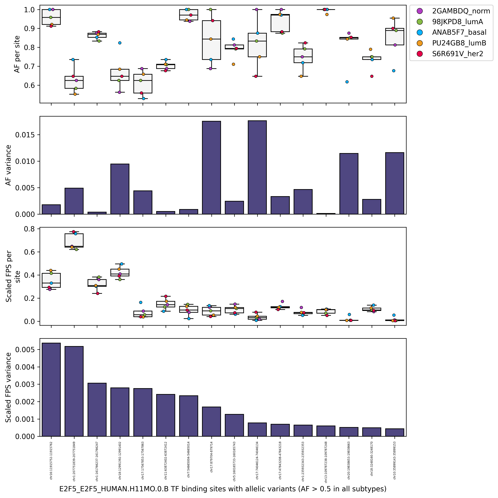
dutchfield_colordict = {'S6R691V_her2': "#e60049", 'ANAB5F7_basal': "#0bb4ff", '98JKPD8_lumA': "#87bc45", 'PU24GB8_lumB': "#ef9b20", '2GAMBDQ_norm': "#b33dc6"}
plt.figure(figsize=(10, 10), dpi=300)
# specify subplot
plt.subplot(4, 1, 1)
sns.boxplot(x='region_id', y='AF', data=high_af_fpsgtmean_filtsorted, color='whitesmoke', linecolor='black', showfliers=False)
sns.stripplot(x='region_id', y='AF', data=high_af_fpsgtmean_filtsorted, hue='sample_id', palette=dutchfield_colordict, size=4, jitter=True, linewidth=0.5, edgecolor='black')
plt.xticks(ticks=plt.xticks()[0], labels=[])
plt.xlabel('')
ylabel = textwrap.fill('AF per site', width=15)
plt.ylabel(ylabel, fontsize=10)
# place legend outside of the plot
plt.legend(bbox_to_anchor=(1.01, 1),borderaxespad=0, markerscale=2, fontsize=10)
plt.subplot(4, 1, 2)
sns.barplot(x='region_id', y='AF_var', data=high_af_fpsgtmean_filtsorted, color='steelblue', edgecolor='black')
plt.xticks(ticks=plt.xticks()[0], labels=[])
plt.xlabel('')
ylabel = textwrap.fill('AF variance', width=15)
plt.ylabel(ylabel, fontsize=10)
plt.subplot(4, 1, 3)
sns.boxplot(x='region_id', y='FPS_scaled', data=high_af_fpsgtmean_filtsorted, color='whitesmoke', linecolor='black', showfliers=False)
sns.stripplot(x='region_id', y='FPS_scaled', data=high_af_fpsgtmean_filtsorted, hue='sample_id', palette=dutchfield_colordict, size=4, jitter=True, legend=False, linewidth=0.5, edgecolor='black')
# plot horizontal line at fps_scaled_global_mean
plt.axhline(y=fps_scaled_global_mean, color='black', linestyle='--')
plt.xticks(ticks=plt.xticks()[0], labels=[])
plt.xlabel('')
ylabel = textwrap.fill('Scaled FPS per site', width=15)
plt.ylabel(ylabel, fontsize=10)
plt.subplot(4, 1, 4)
sns.barplot(x='region_id', y='FPS_scaled_var', data=high_af_fpsgtmean_filtsorted, color='steelblue', edgecolor='black')
plt.xticks(rotation=90, fontsize=4)
plt.xlabel(f'{motif_id} TF binding sites with allelic variants (AF > 0.5 in all subtypes)', fontsize=10)
plt.ylabel('Scaled FPS variance', fontsize=10)
plt.subplots_adjust(hspace=0.05)
plt.tight_layout()
plt.show()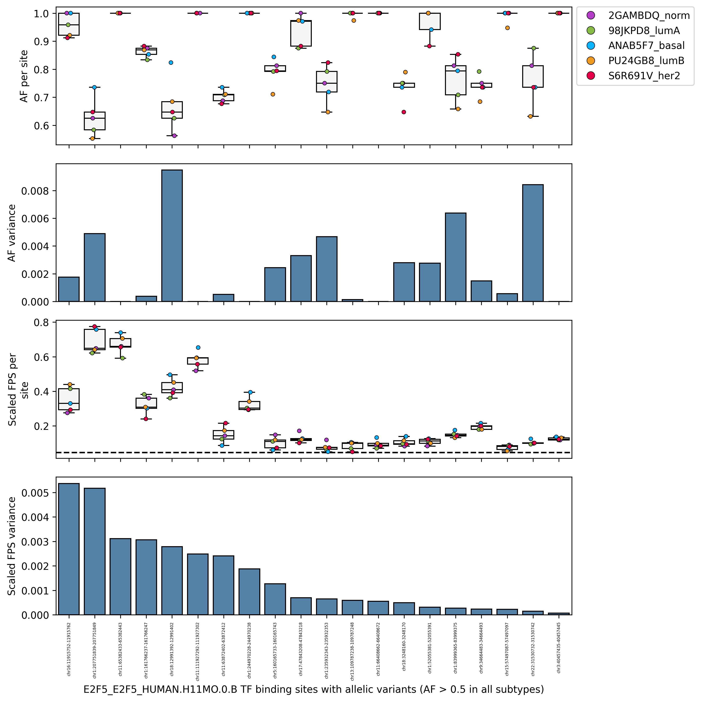
dutchfield_colordict = {'S6R691V_her2': "#e60049", 'ANAB5F7_basal': "#0bb4ff", '98JKPD8_lumA': "#87bc45", 'PU24GB8_lumB': "#ef9b20", '2GAMBDQ_norm': "#b33dc6"}
plt.figure(figsize=(10, 10), dpi=300)
# specify subplot
plt.subplot(4, 1, 1)
sns.boxplot(x='region_id', y='AF', data=low_af_fpsgtmean_filtsorted, color='whitesmoke', linecolor='black', showfliers=False)
sns.stripplot(x='region_id', y='AF', data=low_af_fpsgtmean_filtsorted, hue='sample_id', palette=dutchfield_colordict, size=4, jitter=True, linewidth=0.5, edgecolor='black')
plt.xticks(ticks=plt.xticks()[0], labels=[])
plt.xlabel('')
ylabel = textwrap.fill('AF per site', width=15)
plt.ylabel(ylabel, fontsize=10)
# place legend outside of the plot
plt.legend(bbox_to_anchor=(1.01, 1),borderaxespad=0, markerscale=2, fontsize=10)
plt.subplot(4, 1, 2)
sns.barplot(x='region_id', y='AF_var', data=low_af_fpsgtmean_filtsorted, color='teal', edgecolor='black')
plt.xticks(ticks=plt.xticks()[0], labels=[])
plt.xlabel('')
ylabel = textwrap.fill('AF variance', width=15)
plt.ylabel(ylabel, fontsize=10)
plt.subplot(4, 1, 3)
sns.boxplot(x='region_id', y='FPS_scaled', data=low_af_fpsgtmean_filtsorted, color='whitesmoke', linecolor='black', showfliers=False)
sns.stripplot(x='region_id', y='FPS_scaled', data=low_af_fpsgtmean_filtsorted, hue='sample_id', palette=dutchfield_colordict, size=4, jitter=True, legend=False, linewidth=0.5, edgecolor='black')
# plot horizontal line at fps_scaled_global_mean
plt.axhline(y=fps_scaled_global_mean, color='black', linestyle='--')
plt.xticks(ticks=plt.xticks()[0], labels=[])
plt.xlabel('')
ylabel = textwrap.fill('Scaled FPS per site', width=15)
plt.ylabel(ylabel, fontsize=10)
plt.subplot(4, 1, 4)
sns.barplot(x='region_id', y='FPS_scaled_var', data=low_af_fpsgtmean_filtsorted, color='teal', edgecolor='black')
plt.xticks(rotation=90, fontsize=4)
plt.xlabel(f'{motif_id} TF binding sites with allelic variants (AF > 0.5 in all subtypes)', fontsize=10)
plt.ylabel('Scaled FPS variance', fontsize=10)
plt.subplots_adjust(hspace=0.05)
plt.tight_layout()
plt.show()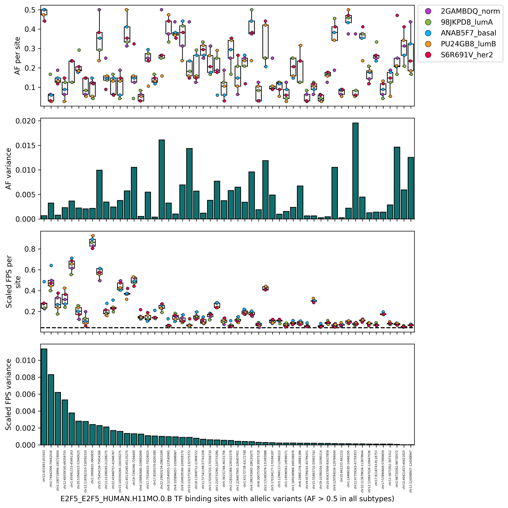
dutchfield_colordict = {'S6R691V_her2': "#e60049", 'ANAB5F7_basal': "#0bb4ff", '98JKPD8_lumA': "#87bc45", 'PU24GB8_lumB': "#ef9b20", '2GAMBDQ_norm': "#b33dc6"}
import textwrap
plt.figure(figsize=(10, 10), dpi=300)
# specify subplot
plt.subplot(4, 1, 1)
sns.boxplot(x='region_id', y='AF', data=high_af_fpsltmean_filtsorted, color='whitesmoke', linecolor='black', showfliers=False)
sns.stripplot(x='region_id', y='AF', data=high_af_fpsltmean_filtsorted, hue='sample_id', palette=dutchfield_colordict, size=4, jitter=True, linewidth=0.5, edgecolor='black')
plt.xticks(ticks=plt.xticks()[0], labels=[])
plt.xlabel('')
ylabel = textwrap.fill('AF per site', width=15)
plt.ylabel(ylabel, fontsize=10)
# place legend outside of the plot
plt.legend(bbox_to_anchor=(1.01, 1),borderaxespad=0, markerscale=2, fontsize=10)
plt.subplot(4, 1, 2)
sns.barplot(x='region_id', y='AF_var', data=high_af_fpsltmean_filtsorted, color='mediumvioletred', edgecolor='black')
plt.xticks(ticks=plt.xticks()[0], labels=[])
plt.xlabel('')
ylabel = textwrap.fill('AF variance', width=15)
plt.ylabel(ylabel, fontsize=10)
plt.subplot(4, 1, 3)
sns.boxplot(x='region_id', y='FPS_scaled', data=high_af_fpsltmean_filtsorted, color='whitesmoke', linecolor='black', showfliers=False)
sns.stripplot(x='region_id', y='FPS_scaled', data=high_af_fpsltmean_filtsorted, hue='sample_id', palette=dutchfield_colordict, size=4, jitter=True, legend=False, linewidth=0.5, edgecolor='black')
# plot horizontal line at fps_scaled_global_median
plt.axhline(y=fps_scaled_global_mean, color='black', linestyle='--')
plt.xticks(ticks=plt.xticks()[0], labels=[])
plt.xlabel('')
ylabel = textwrap.fill('Scaled FPS per site', width=15)
plt.ylabel(ylabel, fontsize=10)
plt.subplot(4, 1, 4)
sns.barplot(x='region_id', y='FPS_scaled_var', data=high_af_fpsltmean_filtsorted, color='mediumvioletred', edgecolor='black')
plt.xticks(rotation=90, fontsize=4)
plt.xlabel(f'{motif_id} TF binding sites with allelic variants (AF > 0.5 in all subtypes)', fontsize=10)
plt.ylabel('Scaled FPS variance', fontsize=10)
plt.subplots_adjust(hspace=0.05)
plt.tight_layout()
plt.show()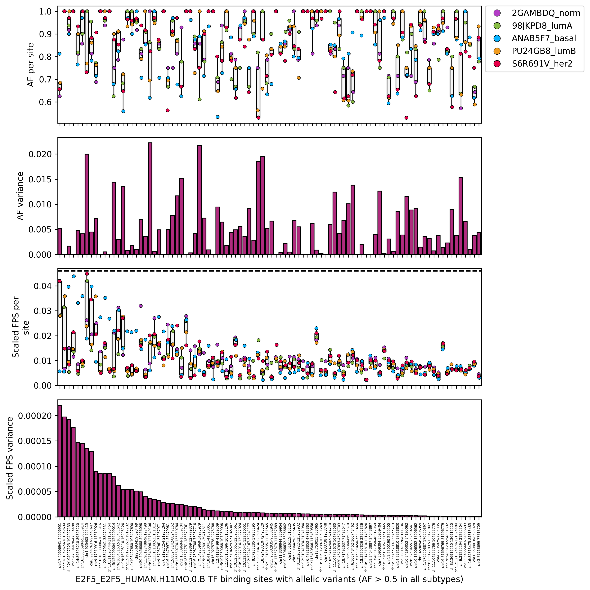
dutchfield_colordict = {'S6R691V_her2': "#e60049", 'ANAB5F7_basal': "#0bb4ff", '98JKPD8_lumA': "#87bc45", 'PU24GB8_lumB': "#ef9b20", '2GAMBDQ_norm': "#b33dc6"}
plt.figure(figsize=(10, 10), dpi=300)
# specify subplot
plt.subplot(4, 1, 1)
sns.boxplot(x='region_id', y='AF', data=low_af_fpsltmean_filtsorted, color='whitesmoke', linecolor='black', showfliers=False)
sns.stripplot(x='region_id', y='AF', data=low_af_fpsltmean_filtsorted, hue='sample_id', palette=dutchfield_colordict, size=4, jitter=True, linewidth=0.5, edgecolor='black')
plt.xticks(ticks=plt.xticks()[0], labels=[])
plt.xlabel('')
ylabel = textwrap.fill('AF per site', width=15)
plt.ylabel(ylabel, fontsize=10)
# place legend outside of the plot
plt.legend(bbox_to_anchor=(1.01, 1),borderaxespad=0, markerscale=2, fontsize=10)
plt.subplot(4, 1, 2)
sns.barplot(x='region_id', y='AF_var', data=low_af_fpsltmean_filtsorted, color='darkolivegreen', edgecolor='black')
plt.xticks(ticks=plt.xticks()[0], labels=[])
plt.xlabel('')
ylabel = textwrap.fill('AF variance', width=15)
plt.ylabel(ylabel, fontsize=10)
plt.subplot(4, 1, 3)
sns.boxplot(x='region_id', y='FPS_scaled', data=low_af_fpsltmean_filtsorted, color='whitesmoke', linecolor='black', showfliers=False)
sns.stripplot(x='region_id', y='FPS_scaled', data=low_af_fpsltmean_filtsorted, hue='sample_id', palette=dutchfield_colordict, size=4, jitter=True, legend=False, linewidth=0.5, edgecolor='black')
# plot horizontal line at fps_scaled_global_mean
plt.axhline(y=fps_scaled_global_mean, color='black', linestyle='--')
plt.xticks(ticks=plt.xticks()[0], labels=[])
plt.xlabel('')
ylabel = textwrap.fill('Scaled FPS per site', width=15)
plt.ylabel(ylabel, fontsize=10)
plt.subplot(4, 1, 4)
sns.barplot(x='region_id', y='FPS_scaled_var', data=low_af_fpsltmean_filtsorted, color='darkolivegreen', edgecolor='black')
plt.xticks(rotation=90, fontsize=4)
plt.xlabel(f'{motif_id} TF binding sites with allelic variants (AF > 0.5 in all subtypes)', fontsize=10)
plt.ylabel('Scaled FPS variance', fontsize=10)
plt.subplots_adjust(hspace=0.05)
plt.tight_layout()
plt.show()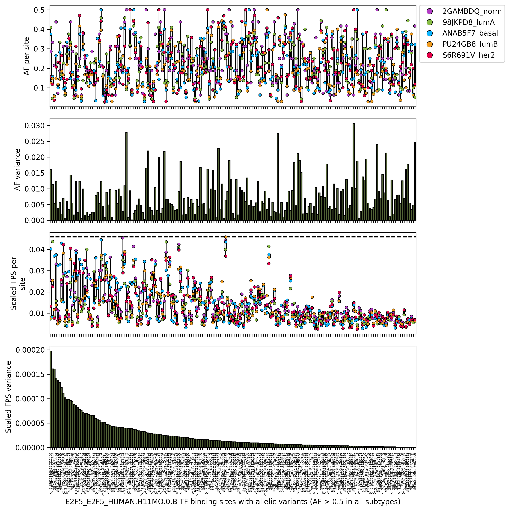
Strategy 1: Subtype highlighting
For FPS distribution there are subtypes that are more represented that others. Let’s try to selectively highlight subtypes which are the maxima per site.
# Find the index of the max FPS_scaled value for each region_id
idx_max = high_nzaf_filtsorted.groupby('region_id', observed=True)['FPS_scaled'].idxmax()
idx_min = high_nzaf_filtsorted.groupby('region_id', observed=True)['FPS_scaled'].idxmin()
# Select the corresponding rows
max_fps_scaled = high_nzaf_filtsorted.loc[idx_max]
min_fps_scaled = high_nzaf_filtsorted.loc[idx_min]
# do the same for AF
idx_max_af = high_nzaf_filtsorted.groupby('region_id', observed=True)['AF'].idxmax()
idx_min_af = high_nzaf_filtsorted.groupby('region_id', observed=True)['AF'].idxmin()
# Select the corresponding rows
max_af_raw = high_nzaf_filtsorted.loc[idx_max_af]
min_af_raw = high_nzaf_filtsorted.loc[idx_min_af]# create masks for the inverse of max and min values
mask = ~high_nzaf_filtsorted.index.isin(idx_max)
max_fps_scaled_inv = high_nzaf_filtsorted[mask]
mask = ~high_nzaf_filtsorted.index.isin(idx_min)
min_fps_scaled_inv = high_nzaf_filtsorted[mask]
# do the same for AF
mask = ~high_nzaf_filtsorted.index.isin(idx_max_af)
max_af_raw_inv = high_nzaf_filtsorted[mask]
mask = ~high_nzaf_filtsorted.index.isin(idx_min_af)
min_af_raw_inv = high_nzaf_filtsorted[mask]# create color dictionary
color_dict = {'S6R691V_her2': "#e60049", 'ANAB5F7_basal': "#0bb4ff", '98JKPD8_lumA': "#87bc45", 'PU24GB8_lumB': "#ef9b20", '2GAMBDQ_norm': "#b33dc6"}
gray = 'lightgray'
color_gray_dict = {'S6R691V_her2': gray, 'ANAB5F7_basal': gray, '98JKPD8_lumA': gray, 'PU24GB8_lumB': gray, '2GAMBDQ_norm': gray}plt.figure(figsize=(10, 10), dpi=300)
# specify subplot
plt.subplot(4, 1, 1)
sns.boxplot(x='region_id', y='AF', data=high_nzaf_filtsorted, color='whitesmoke', linecolor='black', showfliers=False)
sns.stripplot(x='region_id', y='AF', data=max_af_raw_inv, hue='sample_id', palette=color_gray_dict, size=4, jitter=True, legend=False, linewidth=0.5, edgecolor='dimgray', alpha=0.8)
sns.stripplot(x='region_id', y='AF', data=max_af_raw, hue='sample_id', palette=color_dict, size=4, jitter=True, linewidth=0.5, edgecolor='black')
plt.xticks(rotation=90, fontsize=4)
plt.xlabel('')
ylabel = textwrap.fill('AF Per Site (maxima)', width=20)
plt.ylabel(ylabel, fontsize=8)
# place legend outside of the plot
plt.legend(bbox_to_anchor=(1.01, 1),borderaxespad=0, markerscale=2, fontsize=10)
plt.subplot(4, 1, 2)
sns.barplot(x='region_id', y='AF_var', data=high_nzaf_filtsorted, color='darkslateblue', edgecolor='black')
plt.xticks(rotation=90, fontsize=4)
plt.xlabel('')
plt.ylabel('AF Variance', fontsize=8)
plt.subplot(4, 1, 3)
sns.boxplot(x='region_id', y='FPS_scaled', data=high_nzaf_filtsorted, color='whitesmoke', linecolor='black', showfliers=False)
sns.stripplot(x='region_id', y='FPS_scaled', data=max_fps_scaled_inv, hue='sample_id', palette=color_gray_dict, size=4, jitter=True, legend=False, linewidth=0.5, edgecolor='dimgray', alpha=0.8)
sns.stripplot(x='region_id', y='FPS_scaled', data=max_fps_scaled, hue='sample_id', palette=color_dict, size=4, jitter=True, legend=False, linewidth=0.5, edgecolor='black')
plt.xticks(rotation=90, fontsize=4)
plt.xlabel('')
ylabel = textwrap.fill('Scaled FPS Per Site (maxima)', width=20)
plt.ylabel(ylabel, fontsize=8)
plt.subplot(4, 1, 4)
sns.barplot(x='region_id', y='FPS_scaled_var', data=high_nzaf_filtsorted, color='darkslateblue', edgecolor='black')
plt.xticks(rotation=90, fontsize=4)
plt.xlabel(f'{motif_id} TF binding sites with allelic variants (median AF > 0.5)', fontsize=8)
plt.ylabel('FPS Variance', fontsize=8)
plt.subplots_adjust(hspace=0.8)
plt.show()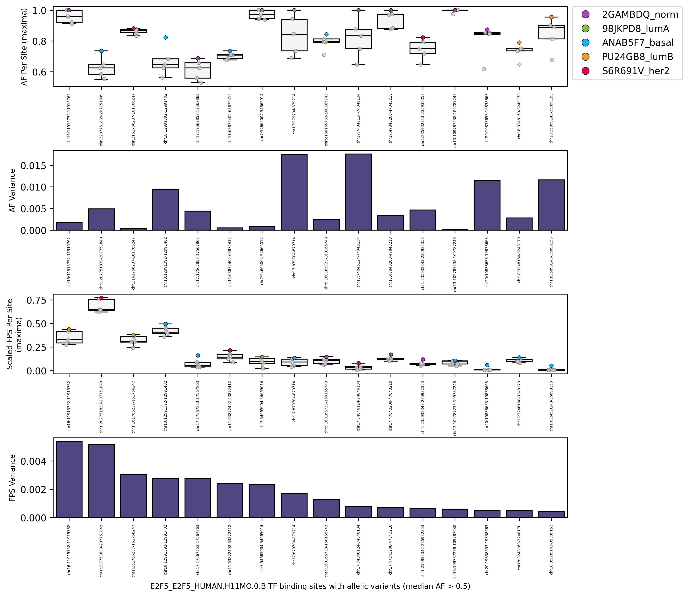
high_nzaf_filtsorted| region_id | sample_id | AF | FPS | FPS_scaled | FPS_var | FPS_scaled_var | AF_var | |
|---|---|---|---|---|---|---|---|---|
| 0 | chr16:11915752-11915762 | 2GAMBDQ_norm | 1.000000 | 0.58711 | 0.275108 | 0.033973 | 0.005370 | 0.001758 |
| 1 | chr16:11915752-11915762 | 98JKPD8_lumA | 0.958333 | 0.94151 | 0.414623 | 0.033973 | 0.005370 | 0.001758 |
| 2 | chr16:11915752-11915762 | ANAB5F7_basal | 1.000000 | 0.64275 | 0.329632 | 0.033973 | 0.005370 | 0.001758 |
| 3 | chr16:11915752-11915762 | PU24GB8_lumB | 0.921053 | 0.93861 | 0.439541 | 0.033973 | 0.005370 | 0.001758 |
| 4 | chr16:11915752-11915762 | S6R691V_her2 | 0.911765 | 0.58832 | 0.292889 | 0.033973 | 0.005370 | 0.001758 |
| ... | ... | ... | ... | ... | ... | ... | ... | ... |
| 75 | chr10:35899143-35899153 | 2GAMBDQ_norm | 0.812500 | 0.02357 | 0.011044 | 0.001626 | 0.000437 | 0.011600 |
| 76 | chr10:35899143-35899153 | 98JKPD8_lumA | 0.888889 | 0.01277 | 0.005624 | 0.001626 | 0.000437 | 0.011600 |
| 77 | chr10:35899143-35899153 | ANAB5F7_basal | 0.676471 | 0.10266 | 0.052649 | 0.001626 | 0.000437 | 0.011600 |
| 78 | chr10:35899143-35899153 | PU24GB8_lumB | 0.954545 | 0.01006 | 0.004711 | 0.001626 | 0.000437 | 0.011600 |
| 79 | chr10:35899143-35899153 | S6R691V_her2 | 0.900000 | 0.00773 | 0.003848 | 0.001626 | 0.000437 | 0.011600 |
80 rows × 8 columns
# spearman correlation between AF and FPS_scaled for each subtype in the high_nzaf_filtsorted dataframe; it will tell you that when you rank the FPS values across all sites for one subtype, do you see a similar ranking for AF values across all sites for that subtype
import scipy.stats as stats
for subtype in high_nzaf_filtsorted['sample_id'].unique():
corr_df = high_nzaf_filtsorted[high_nzaf_filtsorted['sample_id'] == subtype].copy()
correlation, pvalue = stats.spearmanr(corr_df['FPS_scaled'], corr_df['AF'])
print(subtype, correlation, pvalue)2GAMBDQ_norm -0.3008431649277951 0.2575346355188044
98JKPD8_lumA -0.19512456269131023 0.46894749109489353
ANAB5F7_basal 0.008915786895268651 0.9738575664657743
PU24GB8_lumB -0.1577011959909012 0.5596879777607182
S6R691V_her2 -0.19274176740795823 0.47449946914811225# quantify the number of filtered sites per sample_id
max_af_raw_subset = max_af_raw[['region_id', 'sample_id']]
max_af_raw_df = max_af_raw_subset.groupby('sample_id', observed=False)['region_id'].count().to_frame()max_af_raw_df| region_id | |
|---|---|
| sample_id | |
| 2GAMBDQ_norm | 6 |
| 98JKPD8_lumA | 2 |
| ANAB5F7_basal | 4 |
| PU24GB8_lumB | 2 |
| S6R691V_her2 | 2 |
max_fps_scaled_subset = max_fps_scaled[['region_id', 'sample_id']]
max_fps_scaled_df = max_fps_scaled_subset.groupby('sample_id', observed=False)['region_id'].count().to_frame()max_fps_scaled_df| region_id | |
|---|---|
| sample_id | |
| 2GAMBDQ_norm | 3 |
| 98JKPD8_lumA | 2 |
| ANAB5F7_basal | 7 |
| PU24GB8_lumB | 1 |
| S6R691V_her2 | 3 |